Explore खोजें
1109 species. Go in by the kind of thing you saw; inside a large group, look-alikes sit together by family. Know the name? Use the search box.
1109 प्रजातियाँ। जो दिखा उसकी तरह से अंदर जाइए; बड़े समूहों में मिलते-जुलते कुल एक साथ हैं। नाम मालूम हो तो खोज डिब्बा इस्तेमाल करें।


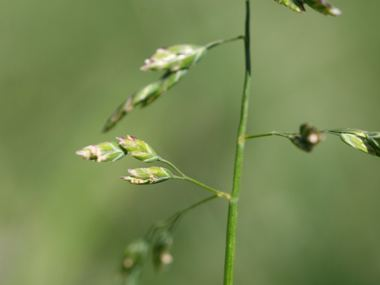
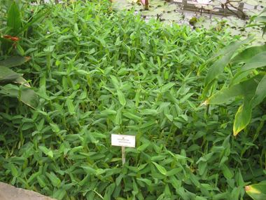

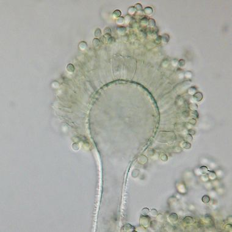

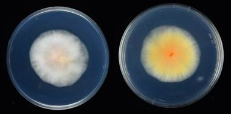
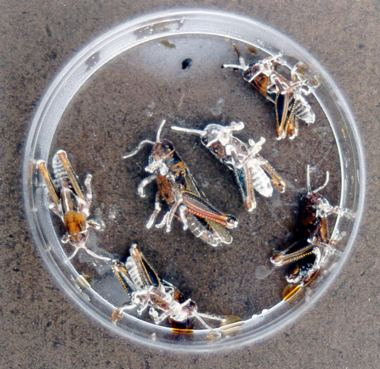


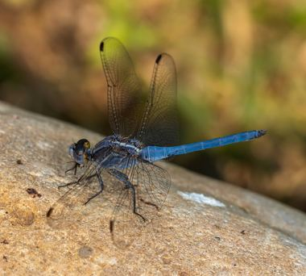
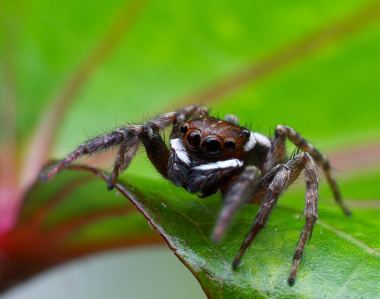

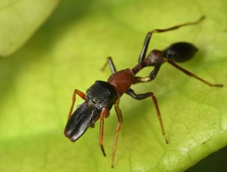
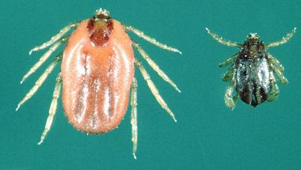


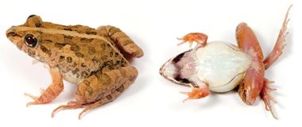


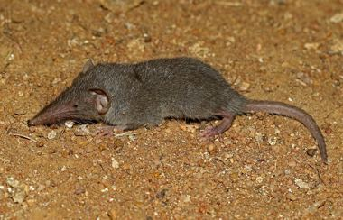
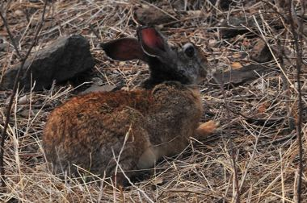
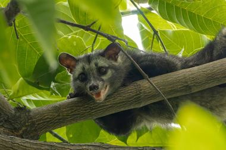
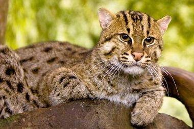


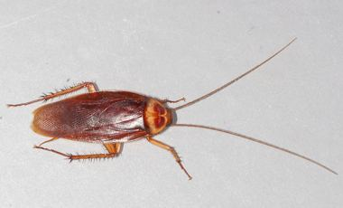


Every name, A to Z सभी नाम
- घरेलू मकड़ी Adanson's Jumping Spider Hasarius adansoni gharelu makdi, koodne wali makdi, deewari makdi
- अडूसा Adusa Justicia adhatoda adusa, adoosa, arusa, vasaka, adulsa
- अफ्लाटॉक्सिन फफूंद Aflatoxin Mold Aspergillus flavus aflatoxin fafund, peeli fafund, anaj ki fafund, aspergillus, grain mold
- अफ़्रीकन एमिग्रेंट तितली African Emigrant Catopsilia florella african emigrant, emigrant
- गोरखमुंडी African Globe Thistle Sphaeranthus senegalensis african globe thistle, gorakh mundi, mundi, sphaeranthus
- हीरामन तोता Alexandrine Parakeet Psittacula eupatria hiraman tota, heeraman tota, alexandrine parakeet, tota
- एलीगेटर वीड Alligator Weed Alternanthera philoxeroides alligator weed, aligator weed, alligator ghas, alternanthera
- घृतकुमारी Aloe Vera Aloe vera ghritkumari, gavarpatha, aloe, kumari
- सरसों का झुलसा Alternaria Blight of Mustard Alternaria brassicae sarson ka jhulsa, jhulsa, alternaria blight, alternaria, leaf blight
- सरिवन Alyce Clover Alysicarpus vaginalis sarivan, shalparni, alyce clover, alysicarpus
- अमलतास Amaltas Cassia fistula amaltas, golden shower, indian laburnum, bandarlathi
- अमेरिकी तिलचट्टा American Cockroach Periplaneta americana ameriki tilchatta, tilchatta, cockroach, lal tilchatta
- आंग्रा कार्प मछली Angra Carp Labeo angra angra carp, angra machhli, angra, khursa, thed
- अनाट्टो Annatto Bixa orellana annatto, sinduri, lipstick tree, latkan, bija
- एनुअल ब्लू घास Annual Bluegrass Poa annua annual bluegrass, poa ghas, bluegrass, winter grass
- एंटलायन Antlion Myrmeleon antlion, ant lion, entlion
- मोगरा Arabian Jasmine Jasminum sambac mogra, bela, motia, arabian jasmine
- अर्बोरियल बाइकलर्ड चींटी Arboreal Bicoloured Ant Tetraponera rufonigra arboreal bicoloured ant, ant
- अर्जुन Arjun Tree Terminalia arjuna arjun, koha, arjuna, arjun ki chhal
- अतीबला Arrowleaf Sida Sida rhombifolia arrowleaf sida, bariyar, kharenti, atibala, sida rhombifolia
- सीता अशोक Ashoka Saraca asoca sita ashok, ashok, ashoka, asok, seeta ashok
- अश्वगंधा Ashwagandha Withania somnifera ashwagandha, asgandh, winter cherry, poison gooseberry, ashwagandha root
- ऐशी ड्रोंगो Ashy Drongo Dicrurus leucophaeus ashy drongo, drongo
- राखी फुदकी Ashy Prinia Prinia socialis chota panchhi, jhadi ki chidiya, fuski
- ऐशी स्किमर व्याध पतंग Ashy Skimmer Orthetrum taeniolatum ashy skimmer, ashy skimmer dragonfly, skimmer, dhoosar vyadh patang
- दिवरी Ashy-crowned Sparrow-Lark Eremopterix griseus diwri, divri, ashy crowned sparrow lark, sparrow lark
- सीपी Asian Clam Corbicula fluminea sipi, seepi, chhoti sipi, ghonghi sipi, clam
- भेंडुक Asian Common Toad Duttaphrynus melanostictus bhenduk, bhend, gandeeri, kalu mendhak
- फुदकी मेंढक Asian Grass Frog Fejervarya limnocharis chhota mendhak, phudki mendhak, ghas ka mendhak
- हरा पतरंगा Asian Green Bee-eater Merops orientalis patanga, hara pataranga, bee-eater
- मधुमक्खी Asian Honey Bee Apis cerana madhumakhi, desi makhkhi, sehad ki makhi, nari
- घर की छिपकली Asian House Gecko Hemidactylus frenatus chhipkali, ghar ki chhipkali, gecko
- छछूंदर Asian House Shrew Suncus murinus chhachhundar, house shrew, asian house shrew, chhachhundari
- कोयल Asian Koel Eudynamys scolopaceus koel, koyal, kokil, kaala koel, bolta pakshi
- घोंघिल Asian Openbill Anastomus oscitans ghonghila, dokra, ghonghi-khor
- ताड़-चट्री Asian Palm Swift Cypsiurus balasiensis tad-chatri, palm swift, patta chatri
- गुलाम मैना Asian Pied Starling Gracupica contra gulam maina, pied myna, dhaol maina, ablak maina
- गैंडा भृंग Asian Rhinoceros Beetle Oryctes rhinoceros ganda bhring, gainda bhaunra, kala bhaunra, rhino beetle
- एशियन जल घास Asian Watergrass Hygroryza aristata asian watergrass, pari ghas, water grass, jal ghas
- लगलग Asian Woolly-necked Stork Ciconia episcopus laglag, laglagh, manikjor, manik jor, haji laglag
- मंडूकपर्णी Asiatic Pennywort Centella asiatica mandukaparni, gotu kola, brahmamanduki, pennywort
- असैसिन बग Assassin Bug Rhynocoris marginatus assassin bug, asasin bug, assassin
- दूधी Asthma Weed Euphorbia hirta dudhi, badi dudhi, dudhiya, lal dudhi, dudhi ghas
- बबूल Babool Acacia nilotica babool, kikar, babur
- बचवा Bachcha Eutropiichthys vacha bachwa, bachua, bachcha, vacha
- बैकस्विमर Backswimmer Anisops backswimmer, back swimmer, bakswimmer
- बेल Bael Aegle marmelos bel, bael, bilva, sriphal
- बहेड़ा Bahera Terminalia bellirica bahera, baheda, bahira, bibhitaki, baheda phal
- बेलन्स क्रेक Baillon's Crake Porzana pusilla baillons crake, crake
- बकाने रोग Bakanae Disease of Rice Fusarium fujikuroi bakanae rog, foolish seedling disease, bakanae, bakane
- कनफूटी Balloon Vine Cardiospermum halicacabum kanphuti, kanphoti, kanphata, balloon vine
- बन तुलसी Ban Tulsi Croton bonplandianus ban tulsi, kala bhangra, bon-tulsi, wild croton
- केला Banana Musa paradisiaca kela, kela plant, plantain, kela tree, dwarf cavendish banana
- खोसटी Banded Gourami Trichogaster fasciata khosti, khosty, khalisa, kholisha, striped gourami
- कनखजूरा Banded Indian Centipede Scolopendra morsitans kankhajoora, gojar, saupad, kankhajura
- अहिराज Banded Krait Bungarus fasciatus ahiraj, ahiraaj, peela kala saamp, banded krait
- बैंडेड फिनटेला मकड़ी Banded Phintella Phintella vittata banded phintella, phintella makdi, patti wali koodne wali makdi
- घोंघी Banded Pond Snail Bellamya bengalensis ghonghi, chhota ghongha, dhari wala ghongha, shamuk
- गंगा मैना Bank Myna Acridotheres ginginianus ganga maina, ganga myna, nadi maina, daria maina
- बरगद Banyan Ficus benghalensis bargad, bar, vat, bahupada
- राजहंस Bar-headed Goose Anser indicus rajhans, raj hans, hans, kareyi hans, birwa
- जौ Barley Hordeum vulgare jau, jav, jow, barley
- उल्लू Barn Owl Tyto alba barn owl, safed ullu, bhuta ullu, kuraya
- घर अबाबील Barn Swallow Hirundo rustica ghar ababeel, swallow, ababeel, lal-kanti ababeel, barn swallow
- जंगली सांवा Barnyard Grass Echinochloa crus-galli jangli sanwa, sanwa, samak, sanwak, barnyard grass
- साँवा Barnyard Millet Echinochloa frumentacea sanwa, sawan, sama, barnyard millet
- गुंडलू Barred Buttonquail Turnix suscitator gundlu, barred buttonquail, button quail
- बार्ड वुल्फ़ स्नेक Barred Wolf Snake Lycodon striatus barred wolf snake, snake
- बाटा Bata Labeo bata bata, bata machhli, bata machli
- बथुआ Bathua Chenopodium album bathua, bathua saag, fat hen, lamb's quarters, goosefoot, bathua grass
- छोटा लटोरा Bay-backed Shrike Lanius vittatus chhota latora, latora, bay backed shrike, shrike
- बया Baya Weaver Ploceus philippinus baya, weaver bird, gauraiya-jaisa
- कनक चंपा Bayur Pterospermum acerifolium bayur, kanak champa, muchkund, pterospermum
- बड़ी चंद्रिका Be-still Tree Rauvolfia tetraphylla badi chandrika, chandrika, be still tree, rauvolfia
- ब्यूवेरिया Beauveria Beauveria bassiana beauveria, byuveria, white muscardine
- बीट वेबवर्म पतंगा Beet Webworm Spoladea recurvalis beet webworm, webworm
- चुकंदर Beetroot and Palak Beet Beta vulgaris chukandar, chukander, beetroot, palak beet
- लाल भेरेंडा Bellyache Bush Jatropha gossypiifolia lal bherenda, lal bhernda, lal jatropha, bellyache bush
- गोह Bengal Monitor Varanus bengalensis goh, goha, goh chihpakli, bada goha, gohira
- बंगाली बार्ब मछली Bengali Barb Megarasbora elanga bengali barb, elanga machhli, rasbora elanga, elanga, dahari
- कनकौआ Benghal Dayflower Commelina benghalensis kankawa, kankaua, kanakaua, dayflower
- भांग Bhang Cannabis sativa bhang, bhaang, bhang ka patta, hemp, cannabis
- भांट Bhant Clerodendrum infortunatum bhant, bhat, bhaant, ghentu, bhanti
- भुई आँवला Bhumi Amla Phyllanthus fraternus bhumi amla, bhui amla, bhuin amla, bhumyamalaki, jangli amli
- जंगली पुदीना Billygoat Weed Ageratum conyzoides jungli pudina, ujla phudki, gandhari, ageratum, goatweed
- करेला Bitter Gourd Momordica charantia karela, tita karela, bitter gourd, bitter melon, balsam pear
- रोटी की फफूंद Black Bread Mold Rhizopus stolonifer roti ki phaphund, phaphundi, fafund, kali fafund, bread mold
- काला चींटा Black Carpenter Ant Camponotus compressus kala chinta, kala cheenta, bada chinta, carpenter ant
- ब्लैक क्रेज़ी चींटी Black Crazy Ant Paratrechina longicornis black crazy ant, ant
- भुजंगा Black Drongo Dicrurus macrocercus bhujanga, kotwal, kala kotwal
- काला तीतर Black Francolin Francolinus francolinus kala teetar, kala titar, kaala teetar, black francolin, black partridge
- उड़द Black Gram Vigna mungo urad, urd, udad, black gram
- चील Black Kite Milvus migrans cheel, kali cheel, para cheel, chil
- ब्लैक मार्श डार्ट व्याध पतंग Black Marsh Dart Damselfly Onychargia atrocyana black marsh dart damselfly, black marsh dart, marsh dart damselfly, kali vyadh patang
- मकोय Black Nightshade Solanum nigrum makoi, makoy, mako, kakmachi, bhatkoiya, gurkamai
- ब्लैक पॉन्ड कछुआ Black Pond Turtle Geoclemys hamiltonii black pond turtle, turtle
- थिरथिरा Black Redstart Phoenicurus ochruros thirthira, thir thira, thirthiraa, black redstart, redstart
- काली सिपाही मक्खी Black Soldier Fly Hermetia illucens black soldier fly, soldier fly, kali sipahi makkhi, bsf
- ब्लैक स्टॉर्क Black Stork Ciconia nigra black stork, kala stork, blak stork, stork
- ब्लैक-बेलीड टर्न Black-bellied Tern Sterna acuticauda black bellied tern, black-bellied tern, kurri, tern
- काली छाती बया Black-breasted Weaver Ploceus benghalensis kali chhati baya, baya, black breasted weaver, weaver
- रातबगुला Black-crowned Night Heron Nycticorax nycticorax raat bagula, night heron, kala-sir bagula, koka, choti koka
- काले सिर वाली चींटी-मकड़ी Black-headed Ant-mimicking Spider Myrmarachne melanocephala black-headed ant-mimicking spider, cheenti makdi, kali siri makdi
- ब्लैक-हेडेड गल Black-headed Gull Chroicocephalus ridibundus black-headed gull, black headed gull, gull
- मुंडा Black-headed Ibis Threskiornis melanocephalus munda, mundia, safed buza, safed buja, kachatore
- ब्लैक-हुडेड ओरिओल Black-hooded Oriole Oriolus xanthornus black hooded oriole, black-hooded oriole, pilak, oriole
- खरगोश Black-naped Hare Lepus nigricollis khargosh, khara, jungli khargosh
- लोहासारंग Black-necked Stork Ephippiorhynchus asiaticus lohasarang, loha sarang, black necked stork, stork
- कठफोड़वा Black-rumped Flameback Dinopium benghalense kathphorwa, kath fodwa, kathkhodwa, kathphodwa, sunehra kathphorwa
- ब्लैक-स्पॉटेड पियरो तितली Black-spotted Pierrot Tarucus balkanica black spotted pierrot, black-spotted pierrot, balkan pierrot, ber pierrot titli
- ब्लैक-टेल्ड गॉडविट Black-tailed Godwit Limosa limosa black-tailed godwit, black tailed godwit, godwit
- ब्लैक-टिप्ड ग्राउंड स्किमर Black-tipped Ground Skimmer Diplacodes nebulosa black-tipped ground skimmer, black tipped ground skimmer, skimmer
- ब्लैक-विंग्ड कुक्कूश्राइक Black-winged Cuckooshrike Coracina melaschistos black-winged cuckooshrike, black winged cuckooshrike, cuckooshrike
- कपसी Black-winged Kite Elanus caeruleus kapsi, black-shouldered kite, kite, masani cheel
- आवाक Black-winged Stilt Himantopus himantopus aawak, lal-tangya, gaz paon, black-winged stilt
- ब्लीकर्स मिस्टस मछली Bleeker's Mystus Mystus bleekeri bleekers mystus, bleeker mystus, tengra, gol tengra, palwa
- ब्लडबेरी Bloodberry Rivina humilis bloodberry, blood berry, rivina
- नीला अजगन्धा Blue Billygoat Weed Ageratum houstonianum blue billygoat weed, flossflower, mexican ageratum, ageratum houstonianum
- नीली व्याधपतंग Blue Dartlet Pseudagrion microcephalum neeli suji, choti neeli dragonfly
- नीली घुइयाँ Blue Morning Glory Ipomoea nil neeli ghuyan, neelkalmi, kala dana, blue morning glory, morning glory
- पंचाक्स Blue Panchax Aplocheilus panchax panchax, panchaks, neeli panchax, killifish
- ब्लू पैंज़ी Blue Pansy Junonia orithya blue pansy, blue pansy butterfly, blu pansy, pansy
- ब्लू टाइगर तितली Blue Tiger Tirumala limniace blue tiger, blue tiger titli, neeli titli, neeli dhariwali titli
- नीलकमल Blue Water Lily Nymphaea nouchali neelkamal, kumud, kokka
- नीली पट्टी मधुमक्खी Blue-banded Bee Amegilla neeli patti madhumakkhi, bhauri, bhonri, bhanwri, blue banded bee
- ब्लू-चीक्ड बी-ईटर Blue-cheeked Bee-eater Merops persicus blue cheeked bee eater, blue-cheeked bee-eater, bada patringa, patringa, bee eater
- बड़ा पतरिंगा Blue-tailed Bee-eater Merops philippinus bada patringa, bada patrenga, patringa, patrenga, bee eater
- हुसैनी पिद्दा Bluethroat Luscinia svecica husaini pidda, hussaini pidda, bluethroat, blue throat, bluthroat
- ब्लाइथ रीड वार्बलर Blyth's Reed Warbler Acrocephalus dumetorum blyths reed warbler, blyth reed warbler, blaith warbler, reed warbler, warbler
- बोगा लाबियो मछली Boga Labeo Labeo boga boga labeo, boga machhli, bhagan, boga, jamuna boga
- बूटेड ईगल Booted Eagle Hieraaetus pennatus booted eagle, eagle
- बूटेड वार्बलर Booted Warbler Iduna caligata booted warbler, warbler
- लौकी Bottle Gourd Lagenaria siceraria lauki, ghiya, bottle gourd, white-flowered gourd, calabash gourd
- ब्राह्मी Brahmi Bacopa monnieri brahmi, jalanimba, somalata
- अंधा साँप Brahminy Blind Snake Indotyphlops braminus andha saamp, andha sanp, andha samp, keenchua saamp, dumuhi
- ब्राह्मणी चील Brahminy Kite Haliastur indus brahminy kite, garuda, garud cheel, shankha cheel, dhoval cheel
- ब्राह्मणी मैना Brahminy Starling Sturnia pagodarum brahminy starling, brahminy myna, pugwi, kalasir myna, bamani myna
- बैंगन Brinjal Solanum melongena baingan, bhanta, brinjal, eggplant, aubergine
- ब्रिसल्ड ग्रासबर्ड Bristled Grassbird Chaetornis striata bristled grassbird, grassbird
- चिपकू घास Bristly Foxtail Setaria verticillata chipku ghas, chipku ghaas, bristly foxtail, setaria
- बाकला Broad Bean Vicia faba bakla, bakala, broad bean, fava bean
- मोई Bronze Featherback Notopterus notopterus moi, patra, pholi, bronze featherback
- दल-पीपी Bronze-winged Jacana Metopidius indicus dal-peepi, pippi, lily trotter
- ब्रुक्स हाउस गेको Brooke's House Gecko Hemidactylus brookii brookes house gecko, gecko
- जल जमनी Broom Creeper Cocculus hirsutus jal jamni, jaljamni, jal jamani, broom creeper
- ब्राउन बूबुक Brown Boobook Ninox scutulata brown boobook, boobook
- ब्राउन क्रेक Brown Crake Amaurornis akool brown crake, crake
- ब्राउन डस्क हॉक व्याध पतंग Brown Dusk Hawk Dragonfly Zyxomma petiolatum brown dusk hawk dragonfly, brown dusk hawk, dusk hawk, bhuri vyadh patang
- ब्राउन डस्क हॉकर व्याध पतंग Brown Dusk Hawker Gynacantha dravida brown dusk hawker, brown dusk hawker dragonfly, dusk hawker, bhura hawker
- मछली उल्लू Brown Fish Owl Ketupa zeylonensis machli ullu, bhoora machli ullu, amrai ullu, fish owl
- भूरा फुदका Brown Planthopper Nilaparvata lugens bhura fudka, bhura mahu, dhan ka fudka, BPH
- ब्राउन रूफ़्ड कछुआ Brown Roofed Turtle Pangshura smithii brown roofed turtle, turtle
- ब्राउन श्राइक Brown Shrike Lanius cristatus brown shrike, bhura latora, latora, shrike
- ब्राउन-बैक्ड रेड मार्श हॉक व्याध पतंग Brown-backed Red Marsh Hawk Orthetrum chrysis brown-backed red marsh hawk, brown backed red marsh hawk, marsh hawk dragonfly, lal bhuri vyadh patang
- भूरा तिलचट्टा Brown-banded Cockroach Supella longipalpa bhura tilchatta, tilchatta, brown banded cockroach, cockroach
- ब्राउन-कैप्ड पिग्मी कठफोड़वा Brown-capped Pygmy Woodpecker Yungipicus nanus brown-capped pygmy woodpecker, brown capped pygmy woodpecker, woodpecker
- बड़ा बसंता Brown-headed Barbet Psilopogon zeylanicus bada basanta, bara basanta, basanta, brown headed barbet, large green barbet
- ब्राउन-हेडेड गल Brown-headed Gull Chroicocephalus brunnicephalus brown-headed gull, brown headed gull, gull
- सीता की लट Buff-striped Keelback Amphiesma stolatum sita ki lat, kharia saamp, keelback
- बरगू घास Burgu Grass Echinochloa stagnina burgu grass, dhansam, jal sanwa, burgu
- अपराजिता Butterfly Pea Clitoria ternatea aparajita, aprajita, blue pea, cordofan pea, butterfly flower
- बचटा Caesar Weed Urena lobata bachata, bachta, caesar weed, urena
- दादमर्दन Candle Bush Senna alata dadmardan, dadmurdan, candle bush, senna alata
- भँवरा Carpenter Bee Xylocopa fenestrata bhanwra, bhaunra, bhramar, kala bhanwra, lakdi ki madhumakkhi
- भूमि आँवला Carry-me Seed Phyllanthus amarus bhumi amla, bhui amla, bhuiamla, carry me seed
- अरंडी Castor Ricinus communis arandi, erand, rendi, arand, castor
- कैस्टर वूली बियर पतंगा Castor Woolly Bear Moth Olepa ricini castor woolly bear moth, moth
- पिस्सू Cat Flea Ctenocephalides felis pissu, pisu, flea, cat flea
- कतला Catla Catla catla katla, katol, boal, catla carp
- गाय बगुला Cattle Egret Bubulcus ibis gay bagula, surkhiya bagula, desi bagula
- किलनी Cattle Tick Rhipicephalus microplus kilni, kilni keeda, chichdi, chichad, cattle tick
- फूल गोभी Cauliflower Brassica oleracea var. botrytis gobhi, phool gobhi, cauliflower, phulkopi, safed gobhi
- जलधनिया Celery-leaved Buttercup Ranunculus sceleratus jaldhaniya, jal dhaniya, celery leaved buttercup, buttercup
- पत्ती धब्बा Cercospora Leaf Spot of Pulses Cercospora canescens patti dhabba, leaf spot, cercospora
- चित्रक Ceylon Leadwort Plumbago zeylanica chitrak, chitra, chitrakmool, leadwort
- चागुनिओ कार्प मछली Chagunio Carp Chagunius chagunio chagunio carp, chagunio machhli, chaguni, galhi, chagun
- चाकी पर्चर व्याध पतंग Chalky Percher Brachydiplax farinosa chalky percher, chalky percher dragonfly, safed vyadh patang, percher
- चमरोड़ Chamror Ehretia laevis chamror, chamror tree, koda, datranga
- चारकोल सड़न Charcoal Rot Macrophomina phaseolina charcoal rot, charcoal sadan, macrophomina
- धारीदार पानी साँप Checkered Keelback Fowlea piscator paniha, dhariyar, checkered keelback, pani ka saanp
- चेंच Chench Corchorus aestuans chench, chenchh, chench saag, wild jute
- पवई Chestnut-tailed Starling Sturnia malabarica pawai, pavai, chestnut tailed starling, myna
- चना Chickpea Cicer arietinum chana, chhola, boot, bengal gram
- मिर्च Chilli Capsicum annuum mirch, mirchi, chilli, green chilli, red chilli pepper
- बकाइन Chinaberry Melia azedarach bakain, drek, bakayan, chinaberry, persian lilac, white cedar
- ब्रेक फ़र्न Chinese Brake Fern Pteris vittata brake fern, chinese brake fern, pteris, fern
- चॉकलेट पैंज़ी Chocolate Pansy Junonia iphita chocolate pansy, chocolate pansy butterfly, choklet pansy, pansy
- बिलपट Chocolate Weed Melochia corchorifolia bilpat, bil pat, chocolate weed, melochia
- चोला पुठिया Chola Barb Puntius chola chola puthia, puthia, pothi, chola barb
- झींझी Cicada Platypleura capitata jheenjhi, cicada, sannata, bhunbhun
- रामगंगरा Cinereous Tit Parus cinereus ramgangra, ram gangra, cinereous tit, tit
- सिट्रीन खंजन Citrine Wagtail Motacilla citreola citrine wagtail, citrin wagtail, sitrin khanjan, khanjan, wagtail
- क्लैमरस रीड वार्बलर Clamorous Reed Warbler Acrocephalus stentoreus clamorous reed warbler, warbler
- कवई Climbing Perch Anabas testudineus kawai, kabai, koi, kai machhli, chalne wali machhli
- चीतल Clown Knifefish Chitala chitala chital, chitala, cheetal machhli, clown knifefish
- गूलर Cluster Fig Ficus racemosa gular, guler, goolar, umar, dumar
- छोटा गोखरू Cocklebur Xanthium strumarium chhota gokhru, chota gokhru, banokda, banokra, cocklebur
- कॉफ़ी बी हॉकमॉथ Coffee Bee Hawkmoth Cephonodes hylas coffee bee hawkmoth, hawkmoth
- कसौंदी Coffee Senna Senna occidentalis kasondi, kasaundi, kasundi, coffee senna
- कमांडर तितली Commander Moduza procris commander titli, commander butterfly, kamandar titli, lal commander
- कॉमन बैरन तितली Common Baron Euthalia aconthea common baron, baron
- राजमा Common Bean Phaseolus vulgaris rajma, razma, common bean, kidney bean
- ब्रॉन्ज़बैक साँप Common Bronzeback Tree Snake Dendrelaphis tristis bronzeback, bronze back saamp, ped ka saamp, tree snake
- कॉमन कार्प Common Carp Cyprinus carpio common carp, carp, amur, karp machhli, vilayati rohu
- अरंडी तितली Common Castor Ariadne merione arandi titli, castor titli, bhuri titli, common castor
- कैट स्नेक Common Cat Snake Boiga trigonata cat snake, common cat snake, kat snake, saamp
- पटेर Common Cattail Typha latifolia pater, patra, cattail, bulrush, reedmace
- कॉमन सेरुलियन तितली Common Cerulean Jamides celeno common cerulean, cerulean
- चिफ़चैफ़ Common Chiffchaff Phylloscopus collybita chiffchaff, common chiffchaff, chifchaf, chiff chaff
- कॉमन क्लबटेल Common Clubtail Ictinogomphus rapax common clubtail, clubtail
- लालखर Common Coot Fulica atra lalkhar, coot, dasari, aari
- कूंज Common Crane Grus grus kunj, koonj, common crane, crane
- कुक्कू Common Cuckoo Cuculus canorus kukku, kuckoo, common cuckoo, cuckoo
- जल-मसूर Common Duckweed Lemna minor jal-masur, jal masur, duckweed, lesser duckweed, common duckweed
- पीली तितली Common Emigrant Catopsilia pomona peeli titli, harila, common emigrant, lemon emigrant
- शाम भूरी तितली Common Evening Brown Melanitis leda shaam bhoori titli, evening brown, leda butterfly, patta titli
- कॉमन फ़ोर-रिंग तितली Common Four-ring Ypthima huebneri common four-ring, common four ring, four-ring
- घास पीतवर्णी Common Grass Yellow Eurema hecabe ghass peetvarni, grass yellow, chota peela, peela titli, common grass yellow
- कॉमन ग्रीनशैंक Common Greenshank Tringa nebularia greenshank, green shank, common greenshank, greenshenk
- कॉमन गल तितली Common Gull Cepora nerissa common gull, common gull butterfly, gull butterfly
- पपीहा Common Hawk-Cuckoo Hierococcyx varius papiha, papeeha, paphia, brain fever bird, hawk-cuckoo
- हुदहुद Common Hoopoe Upupa epops hudhud, hoopoe, common hoopoe
- कौआ तितली Common Indian Crow Euploea core kaua titli, kali titli, bhura patanga, common crow
- रंगीन मेंढक Common Indian Kaloula Kaloula taprobanica rangeen mendhak, chikna mendhak, kaloula, painted frog
- शौबीगा Common Iora Aegithina tiphia shaubiga, saubiga, common iora, iora
- कॉमन जे तितली Common Jay Graphium doson common jay, common jay titli, jay butterfly
- जेज़ेबेल तितली Common Jezebel Delias eucharis jezebel, jezebel titli, lal peeli titli, common jezebel
- बामनिहा Common Keeled Skink Eutropis carinata bamniha, bamni, chikal, skink
- केस्ट्रेल Common Kestrel Falco tinnunculus kestrel, khempchya, karontia, khurmuta
- राम चिरैया Common Kingfisher Alcedo atthis ram chiraiya, kilkila, neela machhira, chhota kingfisher
- करैत Common Krait Bungarus caeruleus karait, chitti, domna karait, krait
- कुकरी साँप Common Kukri Snake Oligodon arnensis kukri saamp, kukri sanp, kukre saamp, kukri snake
- कॉमन लस्कर तितली Common Lascar Pantoporia hordonia common lascar, lascar titli, common laskar titli, chhota lascar
- कॉमन लेपर्ड तितली Common Leopard Phalanta phalantha common leopard, leopard titli, chittidar narangi titli, tendua titli
- कॉमन लाइनब्लू तितली Common Lineblue Prosotas nora common lineblue, lineblue
- काई (गुच्छेदार) Common Liverwort Marchantia polymorpha kai, bhumi kai, chhatri kai, liverwort
- जलमुर्गी Common Moorhen Gallinula chloropus jal murghi, jal murga, paani murghi, karkat
- सामान्य मॉर्मन Common Mormon Papilio polytes samanya mormon, swallowtail, nimbu-titli, common mormon
- मैना Common Myna Acridotheres tristis maina, desi myna, shalik
- कॉमन नवाब तितली Common Nawab Polyura athamas common nawab, nawab titli, common nawab butterfly, do-puchhi nawab
- खटास Common Palm Civet Paradoxurus hermaphroditus khattas, khatas, palm civet, musari
- कॉमन पामफ़्लाई तितली Common Palmfly Elymnias hypermnestra common palmfly, palmfly
- कॉमन पिक्चर विंग Common Picture Wing Rhyothemis variegata common picture wing, picture wing, picture wing dragonfly, pichar wing
- कॉमन पियरो तितली Common Pierrot Castalius rosimon common pierrot, pierrot titli, ber ki titli, chhoti safed titli
- कॉमन पोचार्ड Common Pochard Aythya ferina common pochard, pochard, pochad, komon pochard
- बटेर Common Quail Coturnix coturnix bater, batair, common quail, quail
- कॉमन रेडशैंक Common Redshank Tringa totanus redshank, red shank, common redshank, redshenk
- सरकंडा Common Reed Phragmites karka sarkanda, karka, reed, common reed, narkul
- कॉमन रोज़ तितली Common Rose Pachliopta aristolochiae common rose, common rose titli, kali lal titli, rose titli
- तूती Common Rosefinch Carpodacus erythrinus tuti, tooti, rosefinch, common rosefinch
- कॉमन सेलर तितली Common Sailer Neptis hylas common sailer, sailer titli, kali safed titli, dhariwali titli
- डोमेन साँप Common Sand Boa Eryx conicus domein saanp, do-munha saanp, common sand boa, rough-scaled sand boa, sand boa
- छोटा बटान Common Sandpiper Actitis hypoleucos chota batan, jal-balak, peepi, common sandpiper
- कॉमन शेलडक Common Shelduck Tadorna tadorna common shelduck, shelduck
- कॉमन सिल्वरलाइन तितली Common Silverline Spindasis vulcanus common silverline, silverline titli, common silverline butterfly, chandi-rekha titli
- चाहा Common Snipe Gallinago gallinago chaha, cha ha, chaaha, snipe
- तिलियर Common Starling Sturnus vulgaris tiliyar, tilyar, tiliar, starling, common starling
- दर्जिन Common Tailorbird Orthotomus sutorius darzin, darzi chiriya, jhadi ki chiriya
- छोटी मुर्गाबी Common Teal Anas crecca chhoti murgabi, choti murgabi, murgabi, pata, teal
- ट्रिंकेट साँप Common Trinket Snake Coelognathus helena trinket snake, common trinket snake, trinket, saamp
- अंकरी Common Vetch Vicia sativa ankri, akri, ankra, common vetch
- कॉमन वॉन्डरर तितली Common Wanderer Pareronia anais common wanderer, wanderer
- बरियारा Common Wireweed Sida acuta bariyara, bariyar, bariara, wireweed
- कौड़िया साँप Common Wolf Snake Lycodon aulicus kauria saamp, gharela saamp, wolf snake
- कॉमन वुडश्राइक Common Woodshrike Tephrodornis pondicerianus common woodshrike, woodshrike
- गाजर घास Congress Grass Parthenium hysterophorus gajar ghaas, congress ghaas, gori ghaas
- जंगली करौंदा Conkerberry Carissa spinarum jangli karaunda, jungli karonda, karaunda, conkerberry
- कॉन्वॉल्वुलस हॉकमॉथ Convolvulus Hawkmoth Agrius convolvuli convolvulus hawkmoth, hawkmoth
- पीला गुलमोहर Copperpod Peltophorum pterocarpum peela gulmohar, pila gulmohar, copperpod, peltophorum
- छोटा बसंता Coppersmith Barbet Psilopogon haemacephalus chhota basanta, basanta, bansanta, tambat, tamera
- कोरल-टेल्ड क्लाउड विंग Coral-tailed Cloud Wing Tholymis tillarga coral-tailed cloud wing, coral tailed cloud wing, wing
- काई Cord Moss Funaria hygrometrica kaai, bhoomi kaai, deewar ki kaai
- धनिया Coriander Coriandrum sativum dhaniya, hara dhaniya, dhaniya dana, coriander, cilantro, chinese parsley
- बंदा Corn Spurry Spergula arvensis banda, bandha, corn spurry, spurry
- कोरोमंडल मार्श डार्ट Coromandel Marsh Dart Ceriagrion coromandelianum coromandel marsh dart, marsh dart, yellow damselfly, koromandal marsh dart
- कोटियो मछली Cotio Osteobrama cotio cotio, cotio machhli, rohtee, chhota cotio, kotio
- मिलीबग Cotton Mealybug Phenacoccus solenopsis mealybug, milibug, safed rui kida, mealy bug
- गिर्री Cotton Pygmy-goose Nettapus coromandelianus girri, ghirri, girria, cotton teal, pygmy goose
- बला Country Mallow Sida cordifolia bala, kharenti, khareti, country mallow, sida
- लोबिया Cowpea Vigna unguiculata lobia, lobiya, rawan, cowpea
- ढोरा Cowpea Weevil Callosobruchus maculatus dhora, dhoora, cowpea weevil, pulse weevil
- क्रैब मकड़ी Crab Spider Thomisus Thomisus unidentatus crab spider thomisus, thomisus
- चाँदनी Crape Jasmine Tabernaemontana divaricata chandni, chaandni, crape jasmine, tagar
- खट्टी बूटी Creeping Wood Sorrel Oxalis corniculata khatti buti, khatti booti, tipatiya, tipatia, wood sorrel
- चंद्राकार डिक्टियोफेरिड Crescent Dictyopharid Orthopagus lunulifer crescent dictyopharid, orthopagus lunulifer, crescent planthopper, chandrakaar phudka
- चंडूल Crested Lark Galerida cristata chandul, chandool, crested lark, lark
- सर्प चील Crested Serpent Eagle Spilornis cheela sarp cheel, sarp chil, crested serpent eagle, snake eagle
- लाल व्याधपतंग Crimson Marsh Glider Trithemis aurora lal dragonfly, gulabi patang
- क्रिमसन-टेल्ड मार्श हॉक Crimson-tailed Marsh Hawk Orthetrum pruinosum crimson-tailed marsh hawk, crimson tailed marsh hawk, hawk
- मकरा Crowfoot Grass Dactyloctenium aegyptium makra, makara, nakra, chokri, crowfoot grass
- गुलदाउदी Crown Daisy Glebionis coronaria crown daisy, garland chrysanthemum, guldaudi, glebionis
- क्राउन्ड रिवर कछुआ Crowned River Turtle Hardella thurjii crowned river turtle, turtle
- काई (ज़मीन की हरी गुलाबी काई) Crystalwort Riccia kai, zameen ki kai, hari kai, riccia
- कुचिया Cuchia Monopterus cuchia kuchia, cuchia, kuchiya, kuchia baam, mud eel
- खीरा Cucumber Cucumis sativus kheera, khira, kheera, cucumber
- कुकंबर मॉथ पतंगा Cucumber Moth Diaphania indica cucumber moth, moth
- मीठा नीम Curry Leaf Murraya koenigii meetha neem, mitha neem, kadi patta, curry patta, curry leaf
- कर्वुलेरिया धब्बा Curvularia Leaf Spot Curvularia lunata curvularia, curvularia dhabba, leaf spot
- सीताफल Custard Apple Annona squamosa sitaphal, sharifa, sarifa, sugar apple
- साइक्लोप्स Cyclops Copepod Cyclops cyclops, saiklops, pani ka kida, copepod
- कामलता Cypress Vine Ipomoea quamoclit kamlata, kam lata, cypress vine, kamalata
- ताम्र तितली Danaid Eggfly Hypolimnas misippus danaid eggfly, tamra titli, eggfly
- डार्क ग्रास ब्लू तितली Dark Grass Blue Zizeeria karsandra dark grass blue, blue
- डार्क स्मॉल ब्रांडेड स्विफ़्ट तितली Dark Small Branded Swift Pelopidas mathias dark small branded swift, swift
- डेकोरेटिव सिल्वर ऑर्ब मकड़ी Decorative Silver Orb Spider Leucauge decorata decorative silver orb spider, spider
- डेलिकेट प्रिनिया Delicate Prinia Prinia lepida delicate prinia, prinia
- डेरो बार्ब मछली Dero Barb Bangana dero dero barb, dero machhli, kalabans, mohaylee, dero
- सप्तपर्णी Devil Tree Alstonia scholaris saptaparni, chhatiwan, chhatiyan, satwin, saptaparna
- बिच्छू Devil's Claw Martynia annua bichhu, bichchhu, kaknasika, devils claw
- ढैंचा Dhaincha Sesbania bispinosa dhaincha, dhencha, daincha, jayanti
- धतूरा Dhatura Datura metel dhatura, datura, umeta, kala dhatura, safed dhatura
- हीरक पतंगा Diamondback Moth Plutella xylostella diamondback moth, diamond back moth, heerak patanga, cabbage moth
- पीली व्याधपतंग Ditch Jewel Brachythemis contaminata kachra patang, peeli dragonfly
- दूब Doob Grass Cynodon dactylon doob, durva, dub ghaas, hari doob
- फल भेदक पतंगा Dot-underwing Fruit-piercing Moth Eudocima materna dot-underwing fruit-piercing moth, dot underwing fruit piercing moth, moth
- डबल-बैंडेड जूडी तितली Double-banded Judy Abisara bifasciata double banded judy, judy titli, double-banded judy butterfly, do-patti judy
- नाली की मक्खी Drain Fly Clogmia albipunctatus nali ki makkhi, drain fly, moth fly
- सहजन Drumstick Tree Moringa oleifera sahjan, munga, drumstick tree, horseradish tree, moringa
- पानी केला Duck Lettuce Ottelia alismoides pani kela, paani kela, duck lettuce, ottelia
- डस्की क्रैग मार्टिन Dusky Crag Martin Ptyonoprogne concolor dusky crag martin, martin
- दुसुमियर सीड बग Dussumier's Seed Bug Graptostethus servus dussumiers seed bug, graptostethus servus, red seed bug, dusumier seed bug
- ड्वार्फ गौरमी मछली Dwarf Gourami Trichogaster lalius dwarf gourami, lalius gourami, kholisa, lal kholisa, chhota gourami
- छोटी मधुमक्खी Dwarf Honey Bee Apis florea chhoti madhumakhi, putka, putki, chhota sarang, dwarf honey bee
- बंगाली बबूल Earleaf Acacia Acacia auriculiformis bengali babool, akula, earleaf wattle
- गोरखमुंडी East Indian Globe Thistle Sphaeranthus indicus gorakhmundi, gorakh mundi, mundi, globe thistle
- सफ़ेद गिद्ध Egyptian Vulture Neophron percnopterus safed giddh, safed ged, white vulture
- समुद्रसोख Elephant Creeper Argyreia nervosa samudrasokh, samundar sokh, elephant creeper, argyreia
- सूरन Elephant Foot Yam Amorphophallus paeoniifolius suran, jimikand, jimmikand, ol, elephant foot yam
- चंदा Elongate Glassy Perchlet Chanda nama chanda, glassy fish, chanari, glassy perchlet
- एरी रेशम कीट Eri Silkmoth Samia ricini eri, eri resham keet, eri moth, arandi resham keet, castor silkmoth
- सफेदा Eucalyptus Eucalyptus tereticornis safeda, safed, eucalyptus, yukeliptus, nilgiri
- धवल पंडुक Eurasian Collared Dove Streptopelia decaocto dhaval panduk, desi panduk, collared dove
- यूरेशियन कर्ल्यू Eurasian Curlew Numenius arquata eurasian curlew, curlew
- यूरेशियन स्पैरोहॉक Eurasian Sparrowhawk Accipiter nisus eurasian sparrowhawk, sparrowhawk
- चमचा Eurasian Spoonbill Platalea leucorodia chamcha, chamcha baza, chamchi, spoonbill
- यूरेशियन विजन Eurasian Wigeon Mareca penelope wigeon, widgeon, eurasian wigeon, vijan
- गर्दन ऐंठ Eurasian Wryneck Jynx torquilla gardan ainth, gardan aith, wryneck, eurasian wryneck
- युरोपीय मधुमक्खी European Honey Bee Apis mellifera yuropee madhumakki, honeybee, apis bee, petee-madhumakki
- आई फ्लाई Eye Fly Siphunculina funicola eye fly, aankh ki makkhi, ankh ki makhi, eyefly
- फेयरी श्रिम्प Fairy Shrimp Streptocephalus dichotomus fairy shrimp, fairy shrimps, fairy jhinga, feyri shrimp
- फॉल आर्मीवर्म Fall Armyworm Spodoptera frugiperda fall armyworm, fall army worm, armyworm, phal armyworm
- अशोक (नकली) False Ashoka Monoon longifolium false ashoka, ashok, nakli ashok, debdaru, mast tree
- भृंगराज False Daisy Eclipta prostrata bhringraj, bhangra, bhangraiya, kesraj, kesuti
- खरेटी False Mallow Malvastrum coromandelianum khareti, kharenti, false mallow, malvastrum
- फ़ॉल्स पैरासोल False Parasol Chlorophyllum molybdites false parasol, green spored parasol, fals parasol, chhatri
- पीली जेली Fan-shaped Jelly Fungus Dacryopinax spathularia peeli jelly, jelly fungus, spatula jelly, orange jelly
- फैन-थ्रोटेड लिज़र्ड Fan-throated Lizard Sitana fan throated lizard, fan-throated lizard, sitana, chhipkali
- मेथी Fenugreek Trigonella foenum-graecum methi, methi saag, methi dana, fenugreek, bird's foot
- कुर्चिया Ferruginous Duck Aythya nyroca kurchiya, kurchia, ferruginous duck, white eyed pochard
- हिरनखुरी Field Bindweed Convolvulus arvensis hirankhuri, hiran khuri, wild morning glory, creeping jenny, field bindweed
- मंडुआ Finger Millet Eleusine coracana mandua, marua, ragi, finger millet
- धवई Fire-flame Bush Woodfordia fruticosa dhawai, dhai, dhau, fire flame bush
- फिशिंग कैट Fishing Cat Prionailurus viverrinus fishing cat, fishing billi, machli billi, fishing kat
- कलिहारी Flame Lily Gloriosa superba kalihari, kalihaari, kaliyari, flame lily, glory lily
- गुलमोहर Flame Tree Delonix regia gulmohar, gul mohur, royal poinciana, peacock flower, flame tree
- चपटा गोजर Flat-backed Millipede Asiomorpha coarctata chapta kankhjura, chapta gojar, kida
- फूल मकड़ी Flower Crab Spider Thomisus fool makdi, phool makdi, crab spider
- चिड़िया घोंसला खुम्बी Fluted Bird's Nest Fungus Cyathus striatus chidiya ghosla khumbi, birds nest fungus, birds nest mushroom, striate cup fungus, splash cup fungus
- फ्लाइंग बार्ब मछली Flying Barb Esomus danrica flying barb, danrica, dahdahra, flying minnow, mouchhali
- फोर्कड फिम्ब्री घास Forked Fimbry Fimbristylis dichotoma forked fimbry, fimbry sedge, chinna motha, fimbry
- गुलाबाँस Four O'Clock Mirabilis jalapa gulabbas, gulbans, gul abbas, four oclock
- काकुन Foxtail Millet Setaria italica kakun, kangni, foxtail millet
- गुलचीन Frangipani Plumeria rubra gulchin, champa, golainchi, frangipani
- घोंघा Freshwater Apple Snail Pila globosa ghongha, pani ghongha, seb ghongha, ghanghila
- सुइया Freshwater Garfish Xenentodon cancila suiya, kauwa, freshwater needlefish, garfish
- छोटा झींगा Freshwater Grass Shrimp Macrobrachium lamarrei chota jhinga, grass shrimp, freshwater shrimp, lamarrei prawn
- सीप Freshwater Mussel Lamellidens marginalis seep, meethe pani ki seep, nadi ki seep
- मीठे पानी का घोंघा Freshwater Pond Snail Lymnaea acuminata meethe pani ka ghongha, chhota ghongha, talabi ghongha
- जलपिप्पली Frog Fruit Phyla nodiflora jalpippali, jal pippali, frog fruit, phyla
- भूरी व्याधपतंग Fulvous Forest Skimmer Neurothemis fulvia bhoori dragonfly, bagicha patang
- घास की मकड़ी Funnel-web Wolf Spider Hippasa agelenoides ghass ki makdi, wolf spider, trap spider
- उकठा रोग Fusarium Wilt Fusarium oxysporum uktha, ukatha rog, fusarium wilt, wilt
- गैडवॉल बत्तख Gadwall Mareca strepera gadwall, gadwal, gaidwal, gadwall duck
- गंगा झींगा Ganga River Prawn Macrobrachium gangeticum jhinga, gangaji ka jhinga, meethe pani ka jhinga, nadi ka jhinga
- सोंस Ganges River Dolphin Platanista gangetica sons, soons, susu, sonsh, suns
- गैंगेटिक आइलिया मछली Gangetic Ailia Ailia coila gangetic ailia, ailia machhli, kajoli, patasi, banspata
- गैंगेटिक गगाटा मछली Gangetic Gagata Gagata cenia gangetic gagata, gagata machhli, cenia cat, jungla, cenia
- फाँसा Gangetic Hairfin Anchovy Setipinna phasa phansa, fansa, hairfin anchovy
- कबासी टेंगरा Gangetic Mystus Mystus cavasius kabasi tengra, tengra, gangetic mystus
- डेंडुआ Gangetic Scissortail Rasbora rasbora dendua, dendwa, rasbora, scissortail
- गार्डन क्रॉस मकड़ी Garden Cross Spider Argiope pulchella garden cross spider, spider
- गार्गनी बत्तख Garganey Spatula querquedula garganey batakh, chota sinkh-par, phari teal, khaira, garganey
- गरुआ Garua Bachcha Clupisoma garua garua, garwa, garua bachcha
- घड़ियाल Gharial Gavialis gangeticus gharial, ghariyal, mada machha
- अफ्रीकी घोंघा Giant African Snail Lissachatina fulica afriki ghongha, african ghongha, bada ghongha, african snail
- मंटिस Giant Asian Mantis Hierodula membranacea mantis, baddahast, namaz padhne wala kida
- मल्ला Giant Catfish Wallago attu malla, boal, boyari, attu, barari
- अमरबेल Giant Dodder Cuscuta reflexa amarbel, akashbel, dodder, giant dodder, amarbel vine, akashbel vine
- गोबर भृंग Giant Dung Beetle Catharsius molossus gobar bhring, gobaraila, gobar kida, molossus beetle
- रॉक बी Giant Honey Bee Apis dorsata pahadi madhumakhi, rock bee, dhaman madhumakhi, bhambhori
- आक Giant Milkweed Calotropis gigantea aak, madar, ark, safed aak
- नल Giant Reed Arundo donax nal, nala, narkul, giant reed, arundo
- सिंघारी Giant River Catfish Sperata seenghala singhari, singhara, seenghala, giant river catfish
- सालविनिया Giant Salvinia Salvinia molesta salvinia, giant salvinia, salviniya, kariba weed
- बड़ा पानी का कीड़ा Giant Water Bug Lethocerus indicus pani ka keeda, bada pani ka keeda, pani ka bichhu
- सोन मकड़ी Giant Wood Spider Nephila pilipes son makdi, reshmi makdi, sone wali makdi, badi makdi
- गिलोय Giloy Tinospora cordifolia giloy, guruchi, amrita, guduchi
- लंजई Glory Bower Volkameria inermis lanjai, glory bower, volkameria
- छोटा बुज़ा Glossy Ibis Plegadis falcinellus chhota buza, buza, glossy ibis, ibis
- गोखरू Gokhru Tribulus terrestris gokhru, gokharu, gokshura, chhota gokhru, puncture vine
- गोल्डन बार्ब मछली Golden Barb Pethia gelius golden barb, gelius barb, golden barb machhli, sona titli machhli, geli
- नीलकांता Golden Dewdrop Duranta erecta nilkanta, duranta, golden dewdrop
- सियार Golden Jackal Canis aureus siyar, gidar, gidarh, sona gidar, ban kutta
- गूँच Goonch Bagarius bagarius goonch, gunch, gonch, devil catfish
- कोदई घास Goosegrass Eleusine indica kodai ghas, kodia, kodiya, malankuri, goosegrass
- गवर्नर्स प्लम Governor's Plum Flacourtia indica governors plum, kantai, paniala, ramontchi, baichi
- ग्राम ब्लू तितली Gram Blue Euchrysops cnejus gram blue, blue
- चने की सूंडी Gram Pod Borer Helicoverpa armigera chane ki sundi, chana sundi, phali bhedak, pod borer, bollworm
- ग्रेनाइट घोस्ट Granite Ghost Bradinopyga geminata granite ghost, granite ghost dragonfly, granit ghost
- ग्रास कार्प Grass Carp Ctenopharyngodon idella grass carp, gras carp, grass karp, white amur
- ग्रे वॉल जंपर मकड़ी Gray Wall Jumper Menemerus bivittatus gray wall jumper, jumper
- बड़ा पनकौआ Great Cormorant Phalacrocorax carbo bada pankaua, pankaua, great cormorant, cormorant
- ग्रेट क्रेस्टेड ग्रीब Great Crested Grebe Podiceps cristatus great crested grebe, grebe
- नील-चाँद तितली Great Eggfly Hypolimnas bolina neel-chand titli, neela chand, great eggfly
- बड़ा बगुला Great Egret Ardea alba bada bagula, bara bagla, mallang bagla, safed bagula, bagla
- ग्रेट ऑरेंज टिप तितली Great Orange Tip Hebomoia glaucippe great orange tip, tip
- सौर Great Snakehead Channa marulius saur, saul, bullseye snakehead, pumural
- बड़ा करवानक Great Thick-knee Esacus recurvirostris bada karwanak, bara karvanak, karwanak, great thick knee, stone curlew
- बड़ा ततैया Greater Banded Hornet Vespa tropica bada tataiya, kala-peela tataiya, hornet, greater banded hornet, mahabhim
- महोख Greater Coucal Centropus sinensis mahokh, kuka, crow pheasant, coucal
- कालमुख पतंगा Greater Death's Head Hawkmoth Acherontia lachesis kaalmukh patanga, deaths head hawkmoth, hawkmoth, khopri wala patanga, yamdoot patanga
- बड़ा चमगादड़ Greater False Vampire Bat Lyroderma lyra chamgadad, bada chamgadad, bat, lyroderma
- राज चाहा Greater Painted-snipe Rostratula benghalensis raj chaha, chaha, painted snipe, greater painted snipe
- छोटा चमगादड़ Greater Short-nosed Fruit Bat Cynopterus sphinx chamgadad, chamgadar, chamgidar, phal chamgadad, chhota chamgadad
- ग्रेटर स्पॉटेड ईगल Greater Spotted Eagle Clanga clanga greater spotted eagle, spotted eagle, greter spotted eagle, eagle
- मूँग Green Gram Vigna radiata moong, mung, sabut moong, moong dal, green gram
- ग्रीन कीलबैक Green Keelback Rhabdophis plumbicolor green keelback, keelback, hara saamp, green snake
- हरी लेसविंग Green Lacewing Chrysoperla zastrowi hari lacewing, lacewing, chrysopa, hari jaalidar makkhi
- हरा फुदका Green Leafhopper Nephotettix virescens hara fudka, hara phudka, green leafhopper, leafhopper
- हरी मकड़ी Green Lynx Spider Peucetia viridana hari makdi, patta makdi, links makdi
- ग्रीन सैंडपाइपर Green Sandpiper Tringa ochropus green sandpiper, green sand piper, sandpiper, sandpipar
- हरा शील्ड बग Green Shield Bug Plautia crossota green shield bug, plautia crossota, green stink bug, hara shield bug
- हरी-थूथन लालटेन कीड़ा Green-snouted Lanternfly Pyrops viridirostris green snouted lanternfly, pyrops viridirostris, fulgora viridirostris, hari thuthan lalten keeda
- ग्रीनिश वार्बलर Greenish Warbler Phylloscopus trochiloides greenish warbler, warbler
- ग्रे बुशचैट Grey Bushchat Saxicola ferreus grey bushchat, bushchat
- तीतर Grey Francolin Francolinus pondicerianus teetar, titar, safed teetar, bhura teetar, grey partridge
- ग्रे बगुला Grey Heron Ardea cinerea grey heron, kabra bagula, bada bagula, khaira, anj
- ग्रे पैंसी तितली Grey Pansy Junonia atlites grey pansy, pansy titli, bhuri pansy, grey pansy titli
- ग्रे खंजन Grey Wagtail Motacilla cinerea grey wagtail, gray wagtail, grey khanjan, khanjan
- ग्रे-बेलीड कुक्कू Grey-bellied Cuckoo Cacomantis passerinus grey-bellied cuckoo, grey bellied cuckoo, cuckoo
- ग्रे-ब्रेस्टेड प्रिनिया Grey-breasted Prinia Prinia hodgsonii grey-breasted prinia, grey breasted prinia, prinia
- ग्रे-हेडेड कैनरी फ़्लाईकैचर Grey-headed Canary-flycatcher Culicicapa ceylonensis grey-headed canary-flycatcher, grey headed canary flycatcher, canary-flycatcher
- ग्रे-हेडेड लैपविंग Grey-headed Lapwing Vanellus cinereus grey headed lapwing, grey-headed lapwing, gray headed lapwing, lapwing
- कैम Grey-headed Swamphen Porphyrio poliocephalus kaim, grey-headed gallinule, purple swamphen, purple coot
- ग्रे-थ्रोटेड मार्टिन Grey-throated Martin Riparia chinensis grey-throated martin, grey throated martin, martin
- कलहंस Greylag Goose Anser anser kalhans, kal hans, greylag, greylag goose, grey goose
- नीली व्याधपतंग Ground Skimmer Diplacodes trivialis neeli vyadhapatang, ground skimmer, pathar chatra
- मूँगफली Groundnut Arachis hypogaea moongphali, mungphali, mungfali, groundnut, peanut
- अमरूद Guava Psidium guajava amrud, bihi, guava, common guava
- गूमा Gumma Leucas aspera gumma, guma, gooma, thumbai
- गोबला Hairy Fig Ficus hispida gobla, kathgular, hairy fig, ficus hispida
- हल्दू Haldu Haldina cordifolia haldu, halda, haldua, haldu tree, yellow teak
- हार्डी गन्ना घास Hardy Sugarcane Tripidium arundinaceum hardy sugarcane, rambans ghas, sarpat, bansi ghas
- हरड़ Haritaki Terminalia chebula harad, harar, haritaki, chebulic myrobalan, black myrobalan
- हैसेल्ट्स कांटेदार मकड़ी Hasselt's Spiny Orb-weaver Macracantha hasselti hasselts spiny spider, kantedar makdi, hasselt makdi
- हाथीपायला Hathipaila Indopiptadenia oudhensis hathipaila, hathipaila tree, oudh piptadenia, gainti
- जूँ Head Louse Pediculus humanus capitis joon, ju, jun, head louse, sir ki joon
- हेवी-बॉडीड जंपर मकड़ी Heavy-bodied Jumper Hyllus semicupreus heavy-bodied jumper, heavy bodied jumper, jumper
- हेन हैरियर Hen Harrier Circus cyaneus hen harrier, hen hariyar, harrier, hen harier
- मेहंदी Henna Lawsonia inermis mehndi, mehendi, hina, henna
- गुड़हल Hibiscus Hibiscus rosa-sinensis gurhal, gudhal, jasum, hibiscus
- हाइरोग्लिफिक लिंक्स मकड़ी Hieroglyphic Lynx Spider Hamadruas hieroglyphica hieroglyphic lynx spider, shikari makdi, hieroglyphic makdi
- हिमालयी गिद्ध Himalayan Griffon Gyps himalayensis himalayi giddh, giddh, gidh, himalayan griffon, griffon vulture
- तुलसी Holy Basil Ocimum tenuiflorum tulsi, pavitra tulsi, ram tulsi, krishna tulsi, shyam tulsi, surasa
- हनी गौरमी मछली Honey Gourami Trichogaster chuna honey gourami, chuna gourami, kholisa, chuna kholisa, madhu gourami
- होराज मिस्टस मछली Hora's Mystus Mystus horai horas mystus, hora mystus, tengra, kani tengra, hora
- जलनीम Hornwort Ceratophyllum demersum jalneem, jal neem, sewar, hornwort, coontail
- संठी Horse Purslane Trianthema portulacastrum santhi, sathi, santhee, horse purslane
- हॉर्सहेयर वर्म Horsehair Worm Chordodes horsehair worm, horse hair worm, gordian worm, hair worm
- घरेलू कनखजूरा House Centipede Scutigera coleoptrata gharelu kankhajoora, centipede, 30-legger, scutigera, house centipede
- कौआ House Crow Corvus splendens kaua, desi kaua, gharelu kaua
- धूल का कीट House Dust Mite Dermatophagoides pteronyssinus dust mite, house dust mite, dhul ka keet, dust mait
- घरेलू मक्खी House Fly Musca domestica gharelu makhi, ghar ki makhi, makhi
- चुहिया House Mouse Mus musculus chuhiya, chuhi, chuiya, chhoti chuhiya, house mouse
- घर का चूहा House Rat Rattus rattus ghar ka chua, kala chua, house rat, black rat, chuha
- गौरैया House Sparrow Passer domesticus gauraiya, goriya, chiraiya
- अबाबील House Swift Apus affinis ababeel, batasi, ghar chatri, house swift
- हाउसहोल्ड केसबेयरर पतंगा Household Casebearer Phereoeca uterella household casebearer, casebearer
- ह्यूम वार्बलर Hume's Leaf Warbler Phylloscopus humei humes leaf warbler, humes warbler, hume warbler, leaf warbler
- शिकारी मकड़ी Huntsman Spider Heteropoda venatoria shikari makdi, gharua makdi, chpati makdi
- सेम Hyacinth Bean Lablab purpureus sem, seem, sem phali, hyacinth bean
- जल-जड़ी Hydrilla Hydrilla verticillata jal-jadi, jal jadi, water thyme, hydrilla weed, hydrilla
- नमी-तारा खुम्बी Hygroscopic Earthstar Astraeus hygrometricus earthstar, hygroscopic earthstar, false earthstar, barish ka tara, nami-tara khumbi
- इम्पेशियन्स हॉकमॉथ Impatiens Hawkmoth Theretra oldenlandiae impatiens hawkmoth, hawkmoth
- इम्पीरियल जंपिंग स्पाइडर Imperial Jumping Spider Thyene imperialis imperial jumping spider, imperial makdi, koodne wali makdi
- करंज Indian Beech Millettia pinnata karanj, karanji, pongam oil tree, indian beech
- नीला केंचुआ Indian Blue Worm Perionyx excavatus neela kenchua, nila kenchua, kenchua, blue worm
- पहाड़ मेंढक Indian Bull Frog Hoplobatrachus tigerinus pahad medhak, bada medhak, rana, khagoda
- बिलकारी मेंढक Indian Burrowing Frog Sphaerotheca breviceps matkhodwa mendhak, bilkari mendhak, bhumi mendhak
- इंडियन कैबेज व्हाइट तितली Indian Cabbage White Pieris canidia indian cabbage white, white
- जोंक Indian Cattle Leech Hirudinaria granulosa jonk, jok, jonk keeda, leech, cattle leech
- असली गिरगिट Indian Chameleon Chamaeleo zeylanicus asli girgit, gilot, rang badalne wala girgit
- काला पिद्दा Indian Chat Oenanthe fusca kala pidda, kaala pidda, indian chat, brown rock chat
- नाग Indian Cobra Naja naja nag, gehuwan, kharis, nagin
- केंचुआ Indian Common Earthworm Metaphire posthuma kenchua, kechua, bhumi krimi
- पांगारा Indian Coral Tree Erythrina variegata pangara, dadap, coral tree, mandar, indian coral tree
- जलकाग Indian Cormorant Phalacrocorax fuscicollis jal kaag, jalkag, jal kauwa, pankauwa, cormorant
- साही Indian Crested Porcupine Hystrix indica sahi, sahee, sayal, sahiya
- इंडियन कुक्कू Indian Cuckoo Cuculus micropterus indian cuckoo, cuckoo, kuku, indian kukku
- बड़ा उल्लू Indian Eagle-Owl Bubo bengalensis bada ullu, ghughu, indian eagle owl, shringar ullu
- छिल्ली Indian Elm Holoptelea integrifolia chilla, chillar, chilbil, papri, kanju, papri tree, chillar tree, indian elm
- जुगनू Indian Firefly Luciola praeusta jugnu, firefly, blinker, khadyot
- चित्तीदार कछुआ Indian Flapshell Turtle Lissemys punctata chittidar kachhua, kachhua, flapshell turtle
- बड़ा चमगादड़ Indian Flying Fox Pteropus medius bara chamgadar, phal chamgadar, gadul, gadur
- लोमड़ी Indian Fox Vulpes bengalensis lomri, khekhri, khikhri, indian fox, bengal fox
- अंतरी चूहा Indian Gerbil Tatera indica antri chuha, antari chuha, teru, khet ka chuha, gerbil
- इंडियन ग्लास बार्ब मछली Indian Glass Barb Laubuka laubuca indian glass barb, glass barb, laubuca machhli, daryai laubuca, laubuca
- चंदा Indian Glassy Fish Parambassis ranga chanda, chandi, glassy fish, ranga
- पीलक Indian Golden Oriole Oriolus kundoo pilak, peelak, peelak chidiya, golden oriole
- आँवला Indian Gooseberry Phyllanthus emblica amla, amlika, aoa
- हरा मेंढक Indian Green Frog Euphlyctis hexadactylus hara mendhak, hara medhak, hariya mendhak, green frog, paddy frog
- धनेश Indian Grey Hornbill Ocyceros birostris dhanesh, chalotra, grey hornbill, grey chalotra, dhaneshwar
- नेवला Indian Grey Mongoose Herpestes edwardsii nevla, newla, mungoos, bhujangi
- हाथीसूंडी Indian Heliotrope Heliotropium indicum hathisundi, hathi sundi, hatisundi, indian heliotrope
- बेर Indian Jujube Ziziphus mauritiana ber, beri, badari, ghont
- बगीचे का घोंघा Indian Land Snail Macrochlamys indica bageeche ka ghongha, indian land snail, land snail, zameeni ghongha
- कमल Indian Lotus Nelumbo nucifera kamal, padma, pankaj, jalaj, neeraj, kanwal
- इंडियन मागुर मछली Indian Magur Clarias magur indian magur, magur machhli, wagur, desi magur, magur
- कंघी Indian Mallow Abutilon indicum kanghi, kangi, kanghee, indian mallow
- सरसों Indian Mustard Brassica juncea sarson, rai, laha, kadwi sarson
- कुप्पी Indian Nettle Acalypha indica kuppi, kuppi buti, indian nettle, acalypha
- छपका Indian Nightjar Caprimulgus asiaticus chapka, chhapka, chappak, chhapaka, nightjar
- इंडियन नटहैच Indian Nuthatch Sitta castanea indian nuthatch, nuthatch
- पैंगोलिन Indian Pangolin Manis crassicaudata pangolin, sallu, bajrakit, sallu saanp, thick-tailed pangolin, scaly anteater
- दूधराज Indian Paradise Flycatcher Terpsiphone paradisi dudhraj, doodhraj, shah bulbul, paradise flycatcher
- मोर Indian Peafowl Pavo cristatus mor, mayur, peacock
- चमगादड़ी Indian Pipistrelle Pipistrellus coromandra chamgadari, pipistrelle bat, chamgadar, chhota chamgadar
- नवरंग Indian Pitta Pitta brachyura navrang, naurang, nawrang, pitta, indian pitta
- बगुला Indian Pond Heron Ardeola grayii bagula, andha bagula, kani bagula, paddy bird
- इंडियन पोटासी मछली Indian Potasi Pachypterus atherinoides indian potasi, potasi machhli, regi machhli, patasi, atherinoides
- अजगर Indian Python Python molurus ajgar, indian python, asian rock python, black-tailed python, ajgar saanp
- धामन Indian Rat Snake Ptyas mucosa dhaman, daud, dhamna, jhari saanp
- लाल बिच्छू Indian Red Scorpion Hottentotta tamulus bichhu, lal bichhu, bichchhoo, bichhi
- चपरा Indian River Shad Gudusia chapra chapra, chapila, khaira, chapra machhli, river shad
- कालचुरी Indian Robin Copsychus fulicatus kalchuri, kalchoori, kalchudi, chirka, kali chidiya
- नीलकंठ Indian Roller Coracias benghalensis neelkanth, nilkanth, pahari myna
- पचेरा Indian Roofed Turtle Pangshura tecta pachera, pachhera, chapant, kachhua, roofed turtle
- छोटा उल्लू Indian Scops Owl Otus bakkamoena chhota ullu, chota ullu, chhota ulloo, scops owl
- सफ़ेद गले की मुनिया Indian Silverbill Euodice malabarica chandi munia, chandi muniya, safed munia, munia, pidda
- गंगा कछुआ Indian Softshell Turtle Nilssonia gangetica ganga kachhua, kathawa, softshell turtle
- गुगराल Indian Spot-billed Duck Anas poecilorhyncha gugral, gugraal, garm pai, garmpai, battakh
- इंडियन स्पॉटेड ईगल Indian Spotted Eagle Clanga hastata indian spotted eagle, spotted eagle, chil, eagle
- छोटी मधुमक्खी Indian Stingless Bee Tetragonula iridipennis chhoti madhumakkhi, chhoti makkhi, dammer bee, trigona, deshi makhi
- इंडियन टेंट कछुआ Indian Tent Turtle Pangshura tentoria indian tent turtle, turtle
- करवानक Indian Thick-knee Burhinus indicus karwanak, karvanak, indian thick knee, stone curlew
- टून Indian Toon Toona ciliata toon, tuni, red cedar, toon tree, red cedar tree, indian toon
- पेड़ मेंढक Indian Tree Frog Polypedates maculatus ped mendhak, chhat mendhak, pilia mendhak
- जल-सर्पी Indian Water Strider Gerris spinolae jal-sarpi, water strider, water skipper, pani ka makda
- बबूना Indian White-eye Zosterops palpebrosus babuna, baboona, indian white eye, white eye
- भेड़िया Indian Wolf Canis lupus bhediya, bheriya, indian wolf, wolf
- मझोला बगुला Intermediate Egret Egretta intermedia majhola bagula, jhola bagula, intermediate egret, bagula
- इसाबेलीन श्राइक Isabelline Shrike Lanius isabellinus isabelline shrike, shrike
- कुंदरू Ivy Gourd Coccinia grandis kundru, kundroo, kunduri, tindora, tendli
- नीली गुलमोहर Jacaranda Jacaranda mimosifolia jacaranda, jakaranda, neeli gulmohar, nili gulmohar
- कटहल Jackfruit Artocarpus heterophyllus kathal, jackfruit, phanas
- खेत का केकड़ा Jacquemont's Field Crab Paratelphusa jacquemontii kekda, khet ka kekda, pond crab
- जामुन Jamun Syzygium cumini jamun, java plum, black plum, jambolan
- जापानी लव घास Japanese Lovegrass Eragrostis tenella japanese lovegrass, bhoni, love grass, chhoti ghas
- माज़ुस Japanese Mazus Mazus pumilus mazus, japani mazus, japanese mazus
- रतनजोत Jatropha Jatropha curcas jatropha, ratanjot, ratan jot, jangli arandi, bagh bherenda
- चित्तीदार मेंढक Jerdon's Bullfrog Hoplobatrachus crassus chittidar medhak, bada mendhak, jerdoni bullfrog
- झाऊ Jhau Tamarix dioica jhau, jhaul, tamarisk, salt cedar
- जिमा साग Jima Saag Glinus oppositifolius jima saag, bitter glinus, gima, kadwa saag, glinus oppositifolius
- जॉब्स टियर्स घास Job's Tears Coix lacryma-jobi jobs tears, gurlu, sankhru, gargari
- बरू Johnson Grass Sorghum halepense baru, baroo, barroo, johnson grass
- सातभाई Jungle Babbler Turdoides striata satbhai, ganga babhni, babbler, seven sisters
- जंगली बिल्ली Jungle Cat Felis chaus jungli billi, jangli bilao, billi, van bilav
- जंगली कौआ Jungle Crow Corvus macrorhynchos jungli kaua, pahadi kaua, kala kaua, dhar kaua
- जंगल जलेबी Jungle Jalebi Pithecellobium dulce jangli jalebi, jungle jalebi, jalebi, vilayati imli, manila tamarind
- जंगली उल्लू Jungle Owlet Glaucidium radiatum jangli ullu, jungli ullu, jungle owlet, owlet
- सावाँ Jungle Rice Echinochloa colona sawan, sanwa, sanwak, jungli sawan, barnyard grass
- कचनार Kachnar Bauhinia variegata kachnar, kachnal, kachnaar, orchid tree, camel foot tree
- कदम्ब Kadam Tree Neolamarckia cadamba kadam, kadamb, kadamba, bur-flower tree
- कागज़ी नींबू Kagzi Lime Citrus aurantiifolia kagzi nimbu, kagji nimbu, kagzi nibu, nimbu, lime
- कैम Kaim Mitragyna parvifolia kaim, kaem, keim, kaim kadamb, kadam
- कालबासु Kalbasu Labeo calbasu kalbasu, black rohu, karaunch, baishi
- कालमेघ Kalmegh Andrographis paniculata kalmegh, bhunimba, kirayat, king of bitters, green chiretta, kalmegh herb
- रोहिनी Kamala Tree Mallotus philippensis rohini, kamala, kamela, kamala tree
- कनेर Kaner Nerium oleander kaner, kanera, oleander, rose laurel, nerium
- काँस Kans Grass Saccharum spontaneum kans, kans grass, wild sugarcane, thatch grass
- करौंदा Karonda Carissa carandas karonda, karaunda, karamda, karonde, bengal currant
- कसई Kasai Bridelia retusa kasai, kasai tree, khaja, asana
- केंटिश प्लोवर Kentish Plover Charadrius alexandrinus kentish plover, kentish, plover, kentis plover
- चींटी-नुमा मकड़ी Kerengga Ant-mimic Spider Myrmarachne plataleoides ant mimic spider, ant-mimic spider, chinti makdi, chiti makdi
- कीहोल ग्लाइडर व्याध पतंग Keyhole Glider Tramea basilaris keyhole glider, keyhole glider dragonfly, glider dragonfly, chhidra vyadh patang
- खैर Khair Senegalia catechu khair, khaira, kattha, katha, cutch tree
- खिरनी Khirni Manilkara hexandra khirni, khirni tree, rayan, khirni phal
- बागीचा मकड़ी Kidney Garden Spider Araneus mitificus bagicha makdi, harili makdi, kidney makdi
- नकटा Knob-billed Duck Sarkidiornis melanotos nakta, nakat, nakta batakh, comb duck, knob billed duck
- कुकरौंधा Kukronda Blumea lacera kukronda, kukraundha, kukrondha, kukuronda, blumea
- कुटज Kurchi Holarrhena pubescens kutaj, kurchi, kuda, inderjao
- कुश Kusha Grass Desmostachya bipinnata kush, kusha, dabh, darbha, davoli, kus
- कुसुम Kusum Schleichera oleosa kusum, kusam, kosum, lac tree, ceylon oak
- लाख का कीड़ा Lac Insect Kerria lacca lakh ka kida, rangeeni, sticklac, shellac
- लहसुआ Lahsua Digera muricata lahsua, lahsuwa, lehsua, false amaranth
- लैनेट लीफ़कटर मधुमक्खी Lanate Leafcutter Bee Megachile lanata lanate leafcutter bee, bee
- पंचफूली Lantana Lantana camara panchphuli, raimuniya, ghaneri, putus, tantani
- लार्ज कुक्कूश्राइक Large Cuckooshrike Coracina macei large cuckooshrike, cuckooshrike
- घोंघाई Large Grey Babbler Turdoides malcolmi ghoghai, ghonghai, large grey babbler, babbler
- लार्ज रेज़रबेली मिनो मछली Large Razorbelly Minnow Salmostoma bacaila large razorbelly minnow, razorbelly minnow, bacaila machhli, chalwa machhli, chela
- लार्ज-टेल्ड नाइटजार Large-tailed Nightjar Caprimulgus macrurus large-tailed nightjar, large tailed nightjar, nightjar
- लसोड़ा Lasora Cordia dichotoma lasora, gunda, bahuvar, cordia
- छोटी पंडुक Laughing Dove Spilopelia senegalensis chhoti panduk, panduk, laughing dove
- लीस्ट पिपिस्ट्रेल Least Pipistrelle Pipistrellus tenuis least pipistrelle, pipistrelle
- लेमन पैंसी तितली Lemon Pansy Junonia lemonias lemon pansy, pansy titli, nimbu pansy, aankh wali titli
- मसूर Lentil Lens culinaris masoor, masur dal, lentil
- चंदियल Lesser Adjutant Leptoptilos javanicus chandiyal, chandial, lesser adjutant, adjutant stork
- लेसर बैंडेड हॉर्नेट Lesser Banded Hornet Vespa affinis lesser banded hornet, hornet
- घुँस Lesser Bandicoot Rat Bandicota bengalensis ghoons, ghoos, lesser bandicoot rat, bandicoot rat, ghuns
- राजा व्याधपतंग Lesser Emperor Anax parthenope raja vyadhapatang, lesser emperor, bada vyadhapatang
- छोटी नीली तितली Lesser Grass Blue Zizina otis chhoti neeli titli, lesser grass blue, neeli titli
- सीटी बत्तख Lesser Whistling Duck Dendrocygna javanica silhi, silli, chahi
- लेसर व्हाइटथ्रोट Lesser Whitethroat Curruca curruca lesser whitethroat, whitethroat, lesser white throat, whitethrot
- गोबर छत्ता Lilac Puffball Calvatia cyathiformis gobar chhatta, pufbaal, lilac puffball, pasture puffball
- लिली मॉथ पतंगा Lily Moth Polytela gloriosae lily moth, moth
- लाइम ब्लू तितली Lime Blue Chilades laius lime blue, blue
- नींबू तितली Lime Butterfly Papilio demoleus nimbu titli, lemon butterfly, chequered swallowtail
- अलसी Linseed Linum usitatissimum alsi, tisi, teesi, linseed, flax
- लीची Litchi Litchi chinensis litchi, lichi, lychee, leechi
- लिटिल ब्लू डार्टलेट व्याध पतंग Little Blue Dartlet Amphiallagma parvum little blue dartlet, little blue dartlet damselfly, chhoti neeli vyadh patang, dartlet
- लिटिल ब्लू मार्श हॉक Little Blue Marsh Hawk Brachydiplax sobrina little blue marsh hawk, hawk
- पनकौवा Little Cormorant Microcarbo niger pankauwa, pan kauwa, pani kauwa, jal kauwa, pankawwa
- छोटा बगुला Little Egret Egretta garzetta chhota bagula, kilchia bagula, white egret
- डुबडुबी Little Grebe Tachybaptus ruficollis dubdubi, dubduba, pandubi, pan dubbi, dubki
- खेत की चुहिया Little Indian Field Mouse Mus booduga khet ki chuhiya, khet ka chuha, field mouse, chuhiya
- सहदेवी Little Ironweed Cyanthillium cinereum sahadevi, sahdevi, sahadevee, little ironweed
- कुटकी Little Millet Panicum sumatrense kutki, kutaki, little millet
- छोटा बटेर Little Ringed Plover Charadrius dubius chota bater, balu-bater, chota chaha, binnu
- गेहूँ का मामा Little Seed Canary Grass Phalaris minor gehun ka mama, gulli danda, gulidanda, mandusi, canary grass
- लिटिल स्टिंट Little Stint Calidris minuta little stint, stint, litil stint, sandpiper
- छोटी कुर्री Little Tern Sternula albifrons chhoti kurri, kurri, little tern, tern
- पतली टांग वाली मकड़ी Long-bodied Cellar Spider Pholcus phalangioides patli taang wali makdi, lambi taang wali makdi, gharelu makdi, cellar spider, daddy long legs
- लंबे जबड़े की मकड़ी Long-jawed Orb-weaver Tetragnatha mandibulata lambe jabde ki makdi, stretch spider, water spider, long-jawed spider
- लॉन्ग-लेग्ड बज़र्ड Long-legged Buzzard Buteo rufinus long-legged buzzard, long legged buzzard, buzzard
- लॉन्ग-लेग्ड मार्श स्किमर Long-legged Marsh Skimmer Trithemis pallidinervis long-legged marsh skimmer, long legged marsh skimmer, skimmer
- लटोरा Long-tailed Shrike Lanius schach latora, kajla latora, butcherbird, shrike
- रजत मछली Long-tailed Silverfish Ctenolepisma longicaudatum rajat machhli, silverfish, silver fish, long tailed silverfish
- आर Long-whiskered Catfish Sperata aor aar, aari, ari, long whiskered catfish
- गंधी बूटी Lotus Sweetjuice Glinus lotoides gandhi buti, gandhi booti, glinus, lotus sweetjuice
- मुस्तरु Madras Carpet Grangea maderaspatana mustaru, madras carpet, grangea
- महुआ Mahua Madhuca longifolia mahua, mohua, mohan, mahwa, iluppai
- हंसराज Maidenhair Fern Adiantum capillus-veneris hansraj, hans raj, hansaraj, maidenhair fern, maidenhair
- मक्का Maize Zea mays makka, makai, bhutta, kukri
- पोई Malabar Spinach Basella alba poi, poi saag, pui, malabar spinach
- मलेरिया का मच्छर Malaria Mosquito Anopheles culicifacies malaria machhar, tirchha machhar, khet ka machhar, anopheles
- नीलसर Mallard Anas platyrhynchos nilsar, nil sar, neelsar, mallard, mallard duck
- आम Mango Mangifera indica aam, amb, amra, kairi
- आम का फुदका Mango Hopper Idioscopus clypealis aam ka fudka, aam ka phudka, bhunga, mango hopper
- आम का भुनगा Mango Leafhopper Idioscopus nitidulus aam ka bhunga, aam ka bhungaa, mango hopper, mango leafhopper
- आम का तना छेदक Mango Stem Borer Batocera rufomaculata mango stem borer, aam ka tana chhedak, tana chhedak, stem borer
- आम का गुठली घुन Mango Stone Weevil Sternochetus mangiferae aam ka ghun, guthli ka ghun, aam ki guthli ka kida, mango weevil
- चितकबरा भेंडुक Marbled Toad Duttaphrynus stomaticus bhenduk, chitkabra bhenduk, mendhak, toad
- गेंदा Marigold Tagetes erecta genda, gainda, marigold
- होवरफ्लाई Marmalade Hoverfly Episyrphus balteatus hoverfly, hover fly, mandrane wali makkhi, marmalade hoverfly
- तालमखाना Marsh Barbel Hygrophila auriculata talmakhana, tal makhana, marsh barbel, hygrophila
- मार्श सैंडपाइपर Marsh Sandpiper Tringa stagnatilis marsh sandpiper, sandpiper
- मार्वल घास Marvel Grass Dichanthium annulatum marvel grass, karad, jinjva, marvel ghas
- मौलसरी Maulsari Mimusops elengi maulsari, maulshree, molsari, bakul, spanish cherry
- भंजुरी Mauritian Grass Apluda mutica bhanjuri, bhanjur, mauritian grass, apluda
- सत्यानाशी Mexican Prickly Poppy Argemone mexicana satyanashi, bhadbhand, firangi dhatura, kantedar post, siali
- हरी काई (ज़हरीली) Microcystis Microcystis aeruginosa hari kai, jahreeli kai, kai, pond scum
- मीलभर खरपतवार Mile-a-minute Weed Mikania micrantha milbhar kharpatwar, mikania, mile-a-minute weed, chinese creeper, bittervine
- मिल्कवीड बग Milkweed Bug Spilostethus hospes milkweed bug, bug
- मिल्की डार्टलेट व्याध पतंग Milky Dartlet Damselfly Agriocnemis lacteola milky dartlet damselfly, milky dartlet, white dartlet damselfly, dudhiya vyadh patang
- दूधिया मशरूम Milky Mushroom Calocybe indica doodhiya mushroom, dudhiya mushroom, milky mushroom, dudhia
- पुदीना Mint Mentha arvensis pudina, pudhina, podina, pudeena, mint
- मोला Mola Carplet Amblypharyngodon mola mola, moila, mola machhli, moli, chhoti mola
- मोरार कार्पलेट मछली Morar Carplet Cabdio morar morar carplet, morar machhli, morari, chepi morar, morar
- मॉटल्ड एमिग्रेंट Mottled Emigrant Catopsilia pyranthe mottled emigrant, motled emigrant, emigrant butterfly, mottled titli
- मॉटल्ड वुड आउल Mottled Wood Owl Strix ocellata mottled wood owl, wood owl, ullu, mottled owl
- दीमक Mound-building Termite Odontotermes obesus deemak, deemat, safed chinti, dheemak
- मूस्टैच्ड वार्बलर Moustached Warbler Acrocephalus melanopogon moustached warbler, warbler
- तिलापिया Mozambique Tilapia Oreochromis mossambicus tilapia, jilebi
- मृगल Mrigal Cirrhinus mrigala mrigal, mirka, naini
- मिट्टी की बर्र Mud Dauber Wasp Sceliphron madraspatanum mitti ki barr, mud wasp, mud-building wasp
- मगर Mugger Crocodylus palustris magar, magarmachh, magarmach, magar machh, mugger
- मल्टी-स्पॉटेड सिक्का मकड़ी Multi-spotted Coin Spider Herennia multipuncta multi-spotted coin spider, sikka makdi, patthar makdi
- मूँज Munja Grass Saccharum munja moonj, munja, mooja, sarkanda
- खरबूजा Muskmelon Cucumis melo kharbuja, kharbooja, kharbuza, muskmelon
- सरसों का माहूं Mustard Aphid Lipaphis erysimi sarson ka mahun, mahun, mahu, lahi, mustard aphid
- नेपियर घास Napier Grass Cenchrus purpureus napier, napier ghas, hathi ghas, elephant grass
- नीम Neem Azadirachta indica neem, nim, margosa, Indian lilac
- कैटेनेरिया Nematode-parasitic Chytrid Catenaria anguillulae catenaria, nematode parasite fungus
- हरसिंगार Night Jasmine Nyctanthes arbor-tristis harsingar, parijat, shiuli, night jasmine, parijata
- नीलगाय Nilgai Boselaphus tragocamelus nilgai, blue bull, ghosad, vanroj
- छोटा टिड्डा मेंढक Nilphamari Narrow-mouthed Frog Microhyla nilphamariensis chhota mendhak, tidda mendhak, microhyla, chorus frog
- निर्गुंडी Nirgundi Vitex negundo nirgundi, nirgundee, nirgandi, sambhalu, sambhaloo
- छिपकली Northern House Gecko Hemidactylus flaviviridis chhipkali, chipkali, house gecko, northern house gecko
- गिलहरी Northern Palm Squirrel Funambulus pennantii gilahri, gilehri, panchlakiri gilahri, ramsena
- पिनटेल बत्तख Northern Pintail Anas acuta pintail batakh, sinkh-par, kokarandi, sikhdum, pintail
- लंगूर Northern Plains Grey Langur Semnopithecus entellus langur, langoor, hanuman langur, hanuman bandar, kala muh bandar
- तिदारी Northern Shoveler Spatula clypeata tidari, tidri, chamcha hans, shoveler
- नर्सेज पिक्सी व्याध पतंग Nurse's Pixie Damselfly Ischnura nursei nurses pixie damselfly, nurse's pixie, pixie damselfly, gulabi vyadh patang
- मोथा Nutgrass Cyperus rotundus motha, mutha, nagarmotha
- वन कलमी Obscure Morning Glory Ipomoea obscura van kalmi, ban kalmi, obscure morning glory, ipomoea
- भिंडी Okra Abelmoschus esculentus bhindi, lady's finger, okra, gumbo, okro
- कनेर का पतंगा Oleander Hawkmoth Daphnis nerii kaner ka patanga, kaner patanga, hara patanga, oleander hawkmoth
- ऑलिव बार्ब मछली Olive Barb Systomus sarana olive barb, sarana machhli, olive barb machhli, giddi sarana, sarana
- ऑलिव-बैक्ड पिपिट Olive-backed Pipit Anthus hodgsoni olive-backed pipit, olive backed pipit, pipit
- प्याज़ Onion Allium cepa pyaz, piyaz, pyaaj, kanda, onion
- पियाज़ी Onion Weed Asphodelus tenuifolius piazi, piazee, pyazi, jangli pyaz, onion weed
- कामिनी Orange Jasmine Murraya paniculata kamini, kaamini, orange jasmine, murraya
- ऑरेंज-हेडेड थ्रश Orange-headed Thrush Geokichla citrina orange-headed thrush, orange headed thrush, thrush
- ऑरेंज-टेल्ड मार्श डार्ट व्याध पतंग Orange-tailed Marsh Dart Ceriagrion cerinorubellum orange-tailed marsh dart, orange tailed marsh dart, narangi vyadh patang, marsh dart
- पूर्वी तिलचट्टा Oriental Cockroach Blatta orientalis poorvi tilchatta, tilchatta, cockroach, kala tilchatta, water bug
- पनडुब्बी Oriental Darter Anhinga melanogaster pandubbi, pan dubbi, pandubi, snake bird, darter
- ओरिएंटल फॉल्स हॉक्सबियर्ड Oriental False Hawksbeard Youngia japonica oriental false hawksbeard, youngia japonica, japanese false hawksbeard, crepis japonica
- फल मक्खी Oriental Fruit Fly Bactrocera dorsalis phal makkhi, phal makhi, aam ki makkhi, fruit fly
- गिरगिट Oriental Garden Lizard Calotes versicolor girgit, khikhir, rakt-chuska
- मधुबाज़ Oriental Honey Buzzard Pernis ptilorhynchus madhubaz, madhu baaz, honey buzzard, oriental honey buzzard
- ततैया Oriental Hornet Vespa orientalis tataiya, tatiya, barrai, oriental hornet
- हरी मक्खी Oriental Latrine Fly Chrysomya megacephala hari makkhi, hari makhi, latrine fly, green fly, oriental latrine fly
- दहियर Oriental Magpie-Robin Copsychus saularis dahiyar, dahi chiriya, magpie robin
- भुरभुरा कीड़ा Oriental Mole Cricket Gryllotalpa orientalis bhurbhura keeda, mole cricket, oriental mole cricket, bhudbhuda
- भरत Oriental Skylark Alauda gulgula bharat, bharatpakshi, oriental skylark, skylark
- ओरिएंटल टर्टल डव Oriental Turtle Dove Streptopelia orientalis oriental turtle dove, dove
- छोटा मेंढक Ornate Narrow-mouthed Frog Microhyla ornata gubbara mendhak, chhota medhak, cheenti mendhak
- मछलीमार Osprey Pandion haliaetus machlimar, macchlimar baaj, osprey, khurya baz
- सेंट एंड्रयूज़ क्रॉस मकड़ी Oval St Andrew's Cross Spider Argiope aemula oval st andrews cross spider, spider
- ढींगरी Oyster Mushroom Pleurotus ostreatus dhingri, jangli dhingri, kaath ki dhingri
- पाबदा Pabda Ompok bimaculatus pabda, pabdah, pabo, pabda machhli, butter catfish
- पाबदा कैटफिश मछली Pabdah Catfish Ompok pabda pabdah catfish, pabda machhli, madhu pabda, tambulua, pabdah
- पाबो कैटफिश मछली Pabo Catfish Ompok pabo pabo catfish, pabo machhli, pabo, bavalua
- पैसिफ़िक गोल्डन प्लोवर Pacific Golden Plover Pluvialis fulva pacific golden plover, plover
- धान Paddy Oryza sativa dhan
- धान टिड्डा Paddy Grasshopper Oxya fuscovittata dhan tidda, harit tidda, kheta tidda
- पुआल मशरूम Paddy Straw Mushroom Volvariella volvacea pual mushroom, parali mushroom, dhan ki khumb, saag khumbi
- पैडीफ़ील्ड पैरासोल व्याध पतंग Paddyfield Parasol Dragonfly Neurothemis intermedia paddyfield parasol dragonfly, paddyfield parasol, parasol dragonfly, dhan vyadh patang
- रुगेल Paddyfield Pipit Anthus rufulus rugel, rugail, charchari, pipit
- पैडीफ़ील्ड वार्बलर Paddyfield Warbler Acrocephalus agricola paddyfield warbler, warbler
- रंगीन बग Painted Bug Bagrada hilaris rangeen bug, bagrada bug, sarso-ka-khatmal, painted bug
- गुब्बारा मेंढक Painted Globular Frog Uperodon taprobanicus gubbara mendhak, phoola mendhak, rangeela mendhak
- रंगबिरंगा टिड्डा Painted Grasshopper Poekilocerus pictus rangeebiranga tidda, ak-ka-tidda, calotropis grasshopper, painted grasshopper
- पेंटेड कीलबैक Painted Keelback Xenochrophis cerasogaster painted keelback, keelback
- पेंटेड लेडी तितली Painted Lady Vanessa cardui painted lady, painted lady titli, thistle butterfly
- जांघिल Painted Stork Mycteria leucocephala janghil, jaanghil, kathsaringh, kath sarang, dokh
- पलाश Palash Butea monosperma palash, dhak, tesu, flame of the forest
- पेल ग्रास ब्लू तितली Pale Grass Blue Pseudozizeeria maha pale grass blue, blue
- फूलचुही Pale-billed Flowerpecker Dicaeum erythrorhynchos phoolchuhi, phulchuhi, flowerpecker, pale billed flowerpecker
- पलास गल Pallas's Gull Ichthyaetus ichthyaetus pallass gull, gull
- ताड़ Palmyra Palm Borassus flabellifer taad, tal, tar, taar ka ped, palmyra
- कूदने वाली मकड़ी Pantropical Jumping Spider Plexippus paykulli koodne wali makdi, deewari makdi, kuchalni makdi
- पपीता Papaya Carica papaya papita, papaya, pawpaw
- केंचुआ (लैम्पिटो) Pasture Earthworm Lampito mauritii kenchua, pasture kenchua, mitti ka kenchua
- पाठा Patha Cissampelos pareira patha, padh, pahadvel, patha bel, akanadi
- पत्थरचट्टा Patharchatta Bryophyllum pinnatum patharchatta, patthar chatta, air plant, life plant, miracle leaf
- मटर Pea Pisum sativum matar, mattar, motar, hari matar, pea
- पी ब्लू तितली Pea Blue Lampides boeticus pea blue, long-tailed blue, matar ki titli, neeli chhoti titli
- आड़ू की फल मक्खी Peach Fruit Fly Bactrocera zonata aadu ki phal makkhi, peach fruit fly, phal makkhi, fruit fly
- कृष्णचूड़ा Peacock Flower Caesalpinia pulcherrima krishnachura, gulutura, peacock flower, caesalpinia
- मयूर पंख तितली Peacock Pansy Junonia almana mayur pankh titli, peacock pansy, mor pankhi
- पेयर-शेप्ड पॉटर ततैया Pear-shaped Potter Wasp Delta pyriforme pear-shaped potter wasp, pear shaped potter wasp, wasp
- बाजरा Pearl Millet Cenchrus americanus bajra, bajara, pearl millet
- पीपल Peepal Ficus religiosa peepal, pipal, ashvattha, bodhi vriksha
- थूहर Pencil Tree Euphorbia tirucalli thuhar, thohar, sehund, pencil tree, pencil cactus
- शाहीन Peregrine Falcon Falco peregrinus shaheen, shahin, peregrine falcon, peregrine
- पीटर्स जंपिंग मकड़ी Peters' Jumping Spider Plexippus petersi peters jumping spider, spider
- फालसा Phalsa Grewia asiatica phalsa, falsa, phalsa tree, dhaman
- पिहो Pheasant-tailed Jacana Hydrophasianus chirurgus piho, peeho, jal pipi, jalpipi, pihuya
- नुकिया Pickerel Weed Monochoria vaginalis nukiya, nukia, kankaua, monochoria, pickerel weed
- पाइड एवोसेट Pied Avocet Recurvirostra avosetta pied avocet, avocet
- पड्डू Pied Bushchat Saxicola caprata paddu, kala pincha, kala pitda, kurchi, kala piddha, pied bushchat
- चातक Pied Cuckoo Clamator jacobinus chatak, chaatak, papiha, papeeha, pied cuckoo
- पाइड हैरियर Pied Harrier Circus melanoleucos pied harrier, pied hariyar, harrier, pied harier
- छोटा किलकिला Pied Kingfisher Ceryle rudis chitla kilkila, machhral, kabra kilkila
- चितकबरी धान पतंगी Pied Paddy Skimmer Neurothemis tullia pied paddy skimmer, dhan ki patangi, chitkabri patangi, paddy dragonfly
- अरहर Pigeon Pea Cajanus cajan arhar, tuar, rahar, pigeon pea
- बेशरम Pink Morning Glory Ipomoea carnea subsp. fistulosa besharam, behaya, ghoiyan, kaneri, dopahari
- पिंक शावर Pink Shower Tree Cassia javanica pink shower tree, java cassia, gulabi amaltas, pink cassia
- गुलाबी खट्टी मीठी Pink Woodsorrel Oxalis debilis pink woodsorrel, lilac oxalis, gulabi khatti meethi, oxalis debilis, oxalis corymbosa
- पायनियर तितली Pioneer Belenois aurota pioneer, pioneer titli, caper white
- मैदान फुदकी Plain Prinia Prinia inornata maidan phudki, plain wren-warbler, grass-warbler, kampa-phudki, plain prinia
- साधारण बाघ तितली Plain Tiger Danaus chrysippus plain tiger, bagh titli, akanda titli
- प्लेन्स क्यूपिड तितली Plains Cupid Luthrodes pandava plains cupid, cupid
- टुइयाँ तोता Plum-headed Parakeet Psittacula cyanocephala tuiya, tuiyan, tuia, tota, plum headed parakeet
- परवल Pointed Gourd Trichosanthes dioica parwal, parvel, patok, petha, potal, potol
- नुकीला गंधी कीड़ा Pointed Stink Bug Erthesina acuminata pointed stink bug, erthesina acuminata, acuminate stink bug, nukila gandhi keeda
- अनार Pomegranate Punica granatum anar, anaar, pomegranate, anar ka ped
- चकोतरा Pomelo Citrus maxima chakotara, chakotra, pomelo, batavi nimbu
- सिधरी Pool Barb Puntius sophore sidhari, potiah, pothia, pool barb
- पॉपुलर Poplar Populus deltoides poplar, popular, poplar ped, safeda poplar
- आलू Potato Solanum tuberosum aloo, alu, aalu, batata, potato
- आलू का पिछेती झुलसा Potato Late Blight Phytophthora infestans aalu ka picheti jhulsa, aalu jhulsa, jhulsa rog, late blight
- कुम्हार बर्र Potter Wasp Delta conoideum kumhar barra, kumhar ki barra, kumhaar wasp
- भूमि जूँ Powder-blue Woodlouse Porcellionides pruinosus bhumi joon, bhoomi ju, woodlouse, powder blue isopod
- मटर की चूर्णिल आसिता Powdery Mildew of Pea Erysiphe pisi matar ki churnil asita, churnil asita, powdery mildew, pea mildew
- चिरचिटा Prickly Chaff Flower Achyranthes aspera chirchita, apamarga, latjira, chirchiri, onga
- बड़ी दूधी Prickly Sow Thistle Sonchus asper badi dudhi, bari dudhi, sow thistle, prickly sow thistle
- जारुल Pride of India Lagerstroemia speciosa jarul, jaarul, pride of india, queen crape myrtle
- छोटी दूधी Prostrate Sandmat Euphorbia prostrata prostrate sandmat, prostrate spurge, choti dudhi, euphorbia prostrata
- साइकी तितली Psyche Leptosia nina psyche, psyche butterfly, saiki titli, psyche titli
- ढोरा Pulse Beetle Callosobruchus chinensis dhora, dhoda, dal ka ghun, dal ka kida, pulse beetle
- कद्दू Pumpkin Cucurbita moschata kaddu, kaddoo, sitaphal, kohda, pumpkin
- पुनर्नवा Punarnava Boerhavia diffusa punarnava, ghadapurna, sant, pigweed, spreading hogweed, punarnava herb
- बैंगनी बगुला Purple Heron Ardea purpurea purple heron, lal bagula, lal anj, laltora
- कनियार Purple Orchid Tree Bauhinia purpurea kaniar, kachnar, purple orchid tree, bauhinia purpurea
- शक्कर खोरा Purple Sunbird Cinnyris asiaticus shakkar khora, meetha pakshi, jamuni chiriya
- कुल्फा Purslane Portulaca oleracea kulfa, kulpha, loni, lonia, nonia, khursa, purslane
- पुत्रंजीवा Putranjiva Putranjiva roxburghii putranjiva, putrajivak, putranjeeva, jiyapota
- पिग्मी डार्टलेट Pygmy Dartlet Agriocnemis pygmaea pygmy dartlet, dartlet
- क्वेकर तितली Quaker Neopithecops zalmora quaker titli, quaker butterfly, kweker titli, chhota quaker
- विलायती सिरस Rain Tree Samanea saman vilayati siris, rain tree, samanea
- रेनबो वॉटर स्नेक Rainbow Water Snake Enhydris enhydris rainbow water snake, snake
- चपटा घोंघा Ramshorn Snail Indoplanorbis exustus chapta ghongha, ramshorn snail, planorbid snail, pani ka ghongha
- घुनघुनिया Rattleweed Crotalaria retusa rattleweed, jhunjhuniya, ghunghuniya, wedge leaved rattlepod, crotalaria retusa
- रेबा कार्प मछली Reba Carp Cirrhinus reba reba carp, reba machhli, raik machhli, reba, rewah
- लाल मुनिया Red Avadavat Amandava amandava lal munia, laal munia, lal muniya, red munia, strawberry finch
- छाला भृंग Red Blister Beetle Mylabris pustulata chala bhringa, lal bhringa, khajua kira
- सिरोटी पंडुक Red Collared Dove Streptopelia tranquebarica siroti panduk, red collared dove, panduk
- लाल कपास कीड़ा Red Cotton Bug Dysdercus cingulatus lal kapas keeda, lal keeda
- लाल कद्दू कीड़ा Red Pumpkin Beetle Aulacophora foveicollis lal kaddu keeda, kaddu ka lal keeda, lal bhring, red pumpkin beetle
- रेड पम्पकिन बग Red Pumpkin Bug Coridius ianus red pumpkin bug, bug
- दोमुँहा Red Sand Boa Eryx johnii domunha, do muha, domua, dumuhi saamp, red sand boa
- रानी कीड़ा Red Velvet Mite Trombidium grandissimum rani keeda, rani kida, birbahuti, bir bahuti, lal makhmali keeda
- कम्पोस्ट केंचुआ Red Worm Eisenia fetida compost kenchua, lal kenchua, vermi keda
- रेड-ब्रेस्टेड फ़्लाईकैचर Red-breasted Flycatcher Ficedula parva red-breasted flycatcher, red breasted flycatcher, flycatcher
- लालसर Red-crested Pochard Netta rufina lalsar, lal sar, laalsar, red crested pochard, pochard
- राज गिद्ध Red-headed Vulture Sarcogyps calvus raj giddh, raj gidh, red headed vulture, king vulture
- काला बुज़ा Red-naped Ibis Pseudibis papillosa kala buza, kala buja, karankul, karankal, buza
- तुरुमती Red-necked Falcon Falco chicquera turumti, turumtee, red necked falcon, falcon
- जल घोंघा Red-rimmed Melania Melanoides tuberculata jal ghongha, mud snail, pointed snail, thiarid snail, red-rimmed melania
- लाल-कमर अबाबील Red-rumped Swallow Cecropis daurica lal kamar ababeel, ababeel, red rumped swallow, swallow
- गुलदुम बुलबुल Red-vented Bulbul Pycnonotus cafer guldum, bulbul, kala bulbul
- टिटहरी Red-wattled Lapwing Vanellus indicus titeeri, titodi, did-he-do-it
- गुलाबी बुलबुल Red-whiskered Bulbul Pycnonotus jocosus gulabi bulbul, lal-kan bulbul, sipahi bulbul, red-whiskered bulbul
- रेशी Reishi Ganoderma lucidum reishi, lingzhi, kadwa bracket, chikni khumb
- बंदर Rhesus Macaque Macaca mulatta bandar, rhesus bandar, lal-munh ka bandar
- धान का झोंका Rice Blast Fungus Magnaporthe oryzae dhan ka jhonka, jhonka rog, blast rog, dhan ka blast
- छतरी मोथा Rice Flatsedge Cyperus iria chhatri motha, chhatri, motha ghas, rice flatsedge
- गंधी कीड़ा Rice Gundy Bug Leptocorisa varicornis gandhi keeda, gundhi bug, rice gundhi bug, dhan ka gandhi keeda
- हिस्पा Rice Hispa Dicladispa armigera hispa, dhan ka hispa, kanteela bhrung, rice hispa
- पत्ती लपेटक Rice Leaf Folder Cnaphalocrocis medinalis patti lapetak, patti lapet, dhan ka patta lapetak, leaf folder
- राइस स्विफ़्ट तितली Rice Swift Borbo cinnara rice swift, swift
- घुन Rice Weevil Sitophilus oryzae ghun, ghoon, anaj ka ghun, chawal ka ghun, rice weevil
- धान खेत का मच्छर Rice-field Mosquito Culex tritaeniorhynchus dhan khet ka machchhar, machchhar, rice field mosquito, culex
- तोरई Ridge Gourd Luffa acutangula torai, turai, turiya, kali torai, jhinga, ridge gourd
- रीता Rita Catfish Rita rita rita, reeta, rheta
- रिवर हेलियोडोर व्याध पतंग River Heliodor Libellago lineata river heliodor, river heliodor damselfly, heliodor, nadi vyadh patang
- रिवर लाबियो मछली River Labeo Bangana diplostoma river labeo, diplostoma, gaddi, mohaylee, river carp
- नदी टिटहरी River Lapwing Vanellus duvaucelii nadi titahri, nadi tithari, titahri, river lapwing
- नदी घोंघा River Snail Brotia costula nadi ghongha, river snail, brotia, nadi pani ka ghongha
- नदी कुर्री River Tern Sterna aurantia nadi kurri, kurri, kuri, river tern, tern
- कबूतर Rock Pigeon Columba livia kabutar, desi kabutar, gharelu kabutar
- रोहू Rohu Labeo rohita rohu, rui, rohita, rohit
- रत्ती Rosary Pea Abrus precatorius ratti, rati, gunja, ghunghchi, chirmi
- तोता Rose-ringed Parakeet Psittacula krameri tota, popia, suga
- दूधी बेल Rosy Milkweed Vine Oxystelma wallichii dudhi bel, dudhi bail, rosy milkweed, oxystelma
- गुलाबी मैना Rosy Starling Pastor roseus gulabi myna, gulabi starling, tilayer, bahar-myna
- मूषकपर्णी Roundleaf Bindweed Evolvulus nummularius mushakparni, mooshakparni, roundleaf bindweed, evolvulus
- पेडेरस भृंग Rove Beetle Paederus fuscipes paederus, nairobi fly, lal kala kida, rove beetle
- सुर्खाब Ruddy Shelduck Tadorna ferruginea surkhab, surkhaab, chakwa, chakva, ruddy shelduck, brahminy duck
- रडी-ब्रेस्टेड क्रेक Ruddy-breasted Crake Porzana fusca ruddy-breasted crake, ruddy breasted crake, crake
- रफ़ Ruff Calidris pugnax ruff, ruf, ruff sandpiper, ruff bird
- महालत Rufous Treepie Dendrocitta vagabunda mahalat, mahal, taka chor, kotri, mahtab
- कोरिआला Russell's Viper Daboia russelii koriala, daboia, chitti koriala, russell viper
- कत्थई चपटा फुदका Rust-colored Flatid Flata ferrugata rust colored flatid, flata ferrugata, planthopper, katthai chapta phudka
- लाल सहस्रपाद Rusty Millipede Trigoniulus corallinus lal kankhjura, lal kankha, lal kida
- सदाबहार Sadabahar Catharanthus roseus sadabahar, sada bahar, barmasi, barahmasi, nayantara
- कुसुंभ Safflower Carthamus tinctorius kusum, kusumbh, kardi, safflower
- सैफ़्रन-फ़ेस्ड ब्लू डार्ट Saffron-faced Blue Dart Pseudagrion rubriceps saffron-faced blue dart, saffron faced blue dart, dart
- साल Sal Shorea robusta sal, saul, shala, sakhu, sal tree
- बालू मक्खी Sand Fly Phlebotomus argentipes balu makhi, chhoti makhi, kala-azar makhi
- सैंड लार्क Sand Lark Calandrella raytal sand lark, lark
- सर्पगंधा Sarpagandha Rauvolfia serpentina sarpagandha, sarpgandha, chhota chand, chota chand, chandrabhaga
- सारस Sarus Crane Antigone antigone saras, sauras, krauncha
- फुरसा Saw-scaled Viper Echis carinatus phursa, saw-scaled viper, bandi, afai
- आरी-कंधा गंधी कीड़ा Saw-shouldered Stink Bug Neohalys serricollis saw shouldered stink bug, neohalys serricollis, saw shoulder bug, halys serricollis
- खाज का कीट Scabies Mite Sarcoptes scabiei scabies mite, khaj, khujli, itch mite, scabies
- तीतर मुनिया Scaly-breasted Munia Lonchura punctulata teetar munia, spice finch, nutmeg mannikin, churi, scaly-breasted munia
- स्कारलेट बास्कर व्याध पतंग Scarlet Basker Urothemis signata scarlet basker, scarlet basker dragonfly, lal vyadh patang, basker
- दुपहरिया Scarlet Mallow Pentapetes phoenicea dopahariya, dupahariya, dupahri, scarlet mallow
- स्कारलेट मार्श हॉक व्याध पतंग Scarlet Marsh Hawk Aethriamanta brevipennis scarlet marsh hawk, scarlet marsh hawk dragonfly, lal marsh hawk, lal vyadh patang
- कृष्णनील Scarlet Pimpernel Lysimachia arvensis krishna neel, krishnaneel, jonkmari, billi booti, scarlet pimpernel
- सिंदूरी व्याधपतंग Scarlet Skimmer Crocothemis servilia lal patang, sindoori dragonfly
- सेमल Semal Bombax ceiba semal, shalmali, semur, silk cotton tree
- सेनेगल गोल्डन डार्टलेट Senegal Golden Dartlet Ischnura senegalensis senegal golden dartlet, dartlet
- तिल Sesame Sesamum indicum til, teel, tili, gingelly, sesame
- गुदड़ी साग Sessile Joyweed Alternanthera sessilis gudri saag, gudari saag, garundi, saranchi, sessile joyweed
- सात बिंदी भृंग Seven-spot Ladybird Coccinella septempunctata saat bindi bhring, ladybird, seven spot ladybird
- शंखपुष्पी Shankhpushpi Evolvulus alsinoides shankhpushpi, shankhapushpi, shankhavali, vishnukranta, dwarf morning glory
- शतावरी Shatavari Asparagus racemosus shatavari, satavar, shatamuli, wild asparagus, shatavari root
- शीथ ब्लाइट Sheath Blight of Rice Rhizoctonia solani sheath blight, dhan ka sheath blight, rice sheath blight
- शिकाकाई Shikakai Senegalia rugata shikakai, sikakai, ritha-ki-bel, kochi, soap pod
- शिकरा Shikra Accipiter badius shikra, shikru, choti cheel, baz
- शीशम Shisham Dalbergia sissoo shisham, sissu, tali
- चिमटा कीड़ा Shore Earwig Labidura riparia chimta keeda, kaan-kheeda
- अल्प-कर्ण उल्लू Short-eared Owl Asio flammeus chota-kaan ullu, ghass ka ullu, daldal ullu, short-eared owl
- खर पिद्दा Siberian Stonechat Saxicola maurus khar pidda, kharpidda, pidda, siberian stonechat, stonechat
- चक्रमर्द Sickle Senna Senna tora chakramard, kassondi, pawand, chakoda, kasaunda
- सीबोल्ड वॉटर स्नेक Siebold's Water Snake Ferania sieboldii siebolds water snake, snake
- जोग मकड़ी Signature Spider Argiope anasuja jog makdi, likhawat makdi, makdi
- सिहोर Sihor Streblus asper sihor, sihora, sahora, siora, dahiya
- सिल्वर कार्प Silver Carp Hypophthalmichthys molitrix silver carp, silver karp, chini carp, silvar carp
- सफ़ेद मुर्गा Silver Cockscomb Celosia argentea safed murga, safed murg, siliyari, silyari, silver cockscomb
- सिल्वर हैचेट चेला मछली Silver Hatchet Chela Chela cachius silver hatchet chela, chela machhli, kachhi chela, hatchet chela, cachius
- सिल्वर लंबी-जबड़े वाली मकड़ी Silver Long-jawed Orb Weaver Leucauge argyrobapta silver orb weaver, chandi makdi, lambe jabde wali makdi
- सिल्वर ओक Silver Oak Grevillea robusta silver oak, silveroak, silky oak, grevillea
- सफ़ेद मक्खी Silverleaf Whitefly Bemisia tabaci safed makkhi, safed makhi, white fly, whitefly
- सिंध डैनियो मछली Sind Danio Devario devario sind danio, sind danio machhli, devario danio, patukari, debari
- सिंगापुर चींटी Singapore Ant Monomorium destructor singapore ant, ant
- शिरीष Siris Albizia lebbeck shirish, siras, kokko, black siris
- सिक्स-लाइन्ड ट्री फ्रॉग Six-lined Tree Frog Polypedates taeniatus six-lined tree frog, six lined tree frog, frog
- टाइगर बीटल Six-spotted Tiger Beetle Cicindela sexpunctata tiger beetle, tiger bitil, taiger beetle
- छह धब्बे वाली सोनपंखी Six-spotted Zigzag Ladybird Cheilomenes sexmaculata sonpankhi, ladybird, chhah dhabbe wali sonpankhi, ladybird beetle
- कूद मेंढक Skittering Frog Euphlyctis cyanophlyctis kood mendhak, chap mendhak, pani ka mendhak, neer-koopi
- जंगली चौलाई Slender Amaranth Amaranthus viridis jangli chaulai, jungli chaulai, chaulai, slender amaranth, green amaranth
- स्लेंडर साइपरस घास Slender Cyperus Cyperus distans slender cyperus, pani motha, slender sedge, motha
- स्लेंडर रासबोरा मछली Slender Rasbora Rasbora daniconius slender rasbora, rasbora machhli, daniconius, patta machhli, danikoni
- हरी-चित्तीदार व्याधपतंग Slender Skimmer Orthetrum sabina hari-chittidar vyadhapatang, slender skimmer, sabina dragonfly
- कस्तूरी बिलाव Small Indian Civet Viverricula indica kasturi bilaw, small indian civet, kasturi billi, mushk bilaw
- सहेली Small Minivet Pericrocotus cinnamomeus saheli, sahelee, small minivet, minivet
- स्मॉल प्रैटिंकोल Small Pratincole Glareola lactea small pratincole, pratincole, pratinkol, little pratincole
- छोटा घोंघा Small Ramshorn Snail Gyraulus convexiusculus chhota ghongha, chakra ghongha, pani ka ghongha, small ramshorn
- छोटा दीमक छत्ता Small Termite Mushroom Termitomyces clypeatus chota deemat chhatta, chhota barsati chhata
- ऊदबिलाव Smooth-coated Otter Lutrogale perspicillata ud, udbilaw, ud-prani, river otter
- चिचिंडा Snake Gourd Trichosanthes cucumerina chichinda, chichinga, chachinda, snake gourd
- सौर Snakehead Murrel Channa striata saur, saul, sol, saura
- रीठा Soapnut Sapindus mukorossi reetha, ritha, aritha, dodan, soapnut tree
- सामूहिक मकड़ी Social Velvet Spider Stegodyphus sarasinorum samoohik makdi, social spider, velvet spider, stegodyphus spider
- बाँस Solid Bamboo Dendrocalamus strictus baans, lathi baans, nar baans, karail
- ज्वार Sorghum Sorghum bicolor jowar, juar, jwar, sorghum
- दक्षिण एशियाई मोर जंपिंग स्पाइडर South Asian Peacock Jumping Spider Chrysilla volupe peacock jumping spider, chrysilla volupe, mor makdi, rangeen koodne wali makdi
- हरा खटमल Southern Green Stink Bug Nezara viridula hara khatmal, stink bug, hara bug, dhabba bug, southern green stink bug
- मच्छर Southern House Mosquito Culex quinquefasciatus machhar, gharelu machhar, culex mosquito
- जड़ गाँठ सूत्रकृमि Southern Root-knot Nematode Meloidogyne incognita jad ganth sutrakrimi, jad ki ganth, ganth rog, root knot nematode
- स्पेंसेज डार्टलेट व्याध पतंग Spence's Dartlet Pseudagrion spencei spences dartlet, spence's dartlet, dartlet damselfly, neeli vyadh patang
- कांटे वाली चौलाई Spiny Amaranth Amaranthus spinosus kante wali cholai, cholai, spiny pigweed, kanta khutna, kanta chaulai
- कंटकदार मकड़ी Spiny Orb-weaver Gasteracantha kuhli kantakdar makdi, spiny spider, crab spider, star spider, spiny orb-weaver
- केकड़ा Spiny Paddy Crab Sartoriana spinigera kekra, kekda, khet ka kekra, meethe pani ka kekra
- लकड़ी का कान Splitgill Mushroom Schizophyllum commune lakdi ka kaan, splitgill, dry bracket, wood-decay fungus
- गेहूँ का झुलसा Spot Blotch of Wheat Bipolaris sorokiniana gehun ka jhulsa, spot blotch, wheat blight, helminthosporium
- चित्तीदार डर्ट बग Spotted Dirt Bug Pseudopachybrachius guttus spotted dirt bug, pseudopachybrachius guttus, pachybrachius guttus, ground seed bug
- चितरोखा फाख्ता Spotted Dove Spilopelia chinensis chitrokha fakhta, chitla fakhta, chitti fakhta, fakhta, pandubi
- चित्तीदार उल्लू Spotted Owlet Athene brama khusat, chughad, choti ullu
- स्पॉटेड रेडशैंक Spotted Redshank Tringa erythropus spotted redshank, redshank
- गिरई Spotted Snakehead Channa punctata girai, garai, girai machhli, spotted snakehead
- स्प्रिंगटेल Springtails Collembola springtail, spring tail, mitti ka kida, collembola
- स्क्वायरहेड कैटफिश मछली Squarehead Catfish Chaca chaca squarehead catfish, chaca machhli, chega, kurkuri, angler catfish
- डंक मक्खी Stable Fly Stomoxys calcitrans dank makkhi, stable fly, biting fly
- काई (ज़मीन की जेली वाली काई) Star Jelly Nostoc commune kai, zameen ki kai, barsati kai; no specific village name recorded [unknown]
- स्टेपी ईगल Steppe Eagle Aquila nipalensis steppe eagle, stepi eagle, steppi eagle, steppe
- स्टिक मैंटिस Stick Mantis Schizocephala bicornis stick mantis, mantis
- सिंघी Stinging Catfish Heteropneustes fossilis singhi, sting catfish, kabila, lachhi
- रत्न-कीड़ा Stoll's Jewel Bug Chrysocoris stolli chamkila keeda, sona keeda, hari patang
- पत्थर फूल Stone-flower Lichen Parmotrema tinctorum chharila, charila, patthar phool, patthar ke phool, pathar phool
- चारा शैवाल Stonewort Chara chara, stonewort, chara shaival, kai
- स्टॉर्क-बिल्ड किलकिला Stork-billed Kingfisher Pelargopsis capensis stork-billed kingfisher, stork billed kingfisher, kingfisher
- स्ट्रीक-थ्रोटेड स्वैलो Streak-throated Swallow Petrochelidon fluvicola streak throated swallow, streak-throated swallow, ababeel, swallow
- स्ट्रीक्ड वीवर Streaked Weaver Ploceus manyar streaked weaver, weaver
- स्ट्रीम ग्लोरी व्याध पतंग Stream Glory Neurobasis chinensis stream glory, stream glory damselfly, glory damselfly, hari vyadh patang
- स्ट्रिएटेड बैबलर Striated Babbler Argya earlei striated babbler, babbler, satbhai, striated satbhai
- स्ट्रिएटेड ग्रासबर्ड Striated Grassbird Megalurus palustris striated grassbird, grassbird
- टेंगरा Striped Catfish Mystus vittatus tengra, tingra, striped mystus
- लकड़बग्घा Striped Hyena Hyaena hyaena lakadbaggha, lakad bhagga, lakarbaggha, lakkadbagga, jhinka
- शिकारी मकड़ी Striped Lynx Spider Oxyopes salticus shikari makdi, striped makdi, khet ki makdi
- स्ट्राइप्ड पियरो तितली Striped Pierrot Tarucus nara striped pierrot, nara pierrot, striped pierrot titli, dharidar pierrot
- बाघ तितली Striped Tiger Butterfly Danaus genutia baagh titli, kaala-narangi titli, zebradar titli
- सुबबूल Subabul Leucaena leucocephala subabool, vilayati babool, kubabool, leadtree
- गन्ना Sugarcane Saccharum officinarum ganna, eekh, ikh
- गन्ने का तना छेदक Sugarcane Early Shoot Borer Chilo infuscatellus ganne ka tana chhedak, tana chhedak, ganna borer, shoot borer
- पायरिला Sugarcane Pyrilla Pyrilla perpusilla pyrilla, pairilla, ganne ka fudka, sugarcane hopper
- गन्ने का लाल सड़न Sugarcane Red Rot Colletotrichum falcatum ganne ka lal sadan, lal sadan, ganna sadan, red rot
- मीठी पत्ती Sweet Broomweed Scoparia dulcis mithi patti, meethi patti, sweet broomweed, scoparia
- सेंजी Sweet Clover Melilotus indicus senji, sainji, senjhi, ban methi, sweet clover
- ताकरी कैटफिश मछली Taakree Catfish Proeutropiichthys taakree taakree catfish, taakree machhli, takree, regi, schilbeid catfish
- टैडपोल श्रिम्प Tadpole Shrimp Triops granarius tadpole shrimp, triops, tadpol shrimp
- टैगा फ्लाईकैचर Taiga Flycatcher Ficedula albicilla taiga flycatcher, taiga flycacher, red-throated flycatcher, flycatcher
- टेल्ड सेलर मकड़ी Tailed Cellar Spider Crossopriza lyoni tailed cellar spider, spider
- टेल्ड जे तितली Tailed Jay Graphium agamemnon tailed jay, tailed jay titli, jay butterfly
- इमली Tamarind Tamarindus indica imli, imli ka ped, tintidi
- अरबी Taro Colocasia esculenta arbi, arvi, ghuiyan, ghuiya, taro, colocasia
- तौनी कोस्टर Tawny Coster Acraea terpsicore tauni coster, tawny coster, lal titli
- टॉनी ईगल Tawny Eagle Aquila rapax tawny eagle, eagle
- टॉनी-बेलीड बैबलर Tawny-bellied Babbler Dumetia hyperythra tawny-bellied babbler, tawny bellied babbler, babbler
- सागवान Teak Tectona grandis sagwan, sagaun, teak, shaku
- टेमिंक स्टिंट Temminck's Stint Calidris temminckii temmincks stint, temminck stint, stint, temink stint
- तेंदू Tendu Diospyros melanoxylon tendu, temru, timru, ebony, ebony tree, coromandel ebony
- टेंगरा Tengra Catfish Mystus tengara tengra, tengara, tangra, tengra machhli
- दीमक छत्ता Termite Mushroom Termitomyces heimii deemat chhatta, barsat chhata, deemat ki chhattri
- छीर Thatch Grass Imperata cylindrica chhir, chir, siru, ulu, chhir ghas, cogon grass
- थिक गूज़ घास Thick Goosegrass Acrachne racemosa thick goosegrass, jhula ghas, chidiya ghas, goosegrass
- ब्रैकेट कवक Thin-walled Maze Polypore Daedaleopsis confragosa bracket fungus, maze polypore, daedaleopsis
- थ्री-लाइन्ड डार्ट Three-lined Dart Pseudagrion decorum three-lined dart, three lined dart, dart
- हुरहुर Tick Weed Cleome viscosa hurhur, hurhoor, hulhul, tick weed
- टिकेल्स ब्लू फ़्लाईकैचर Tickell's Blue Flycatcher Cyornis tickelliae tickells blue flycatcher, flycatcher
- टिकेल्स लीफ़ वार्बलर Tickell's Leaf Warbler Phylloscopus affinis tickells leaf warbler, warbler
- टिकेल्स थ्रश Tickell's Thrush Turdus unicolor tickells thrush, thrush
- टिकटो Ticto Barb Pethia ticto tikto, ticto, pothi, puthi, tikti
- टाइनी ग्रास ब्लू तितली Tiny Grass Blue Zizula hylax tiny grass blue, gaika blue, chhota neela titli, tiny grass blue butterfly
- सेना पतंगा Tobacco Cutworm Spodoptera litura sena patanga, tobacco caterpillar, cutworm, cotton leafworm
- टोबैको ग्रासहॉपर Tobacco Grasshopper Atractomorpha crenulata tobacco grasshopper, grasshopper
- टमाटर Tomato Solanum lycopersicum tamatar, tomato, love apple
- जंगली पालक Toothed Dock Rumex dentatus jangli palak, jangli palah, sorrel, dock, sharp dock
- तोर महासीर मछली Tor Mahseer Tor tor tor mahseer, mahseer, tor, sahar, mahaseer
- लाजवंती Touch-me-not Mimosa pudica lajwanti, chhui-mui, lajalu, samanga, lajak
- त्रिपंखी Trailing Coldenia Coldenia procumbens tripankhi, trailing coldenia, coldenia
- लेडीबर्ड बीटल Transverse Ladybird Coccinella transversalis ladybird beetle, transverse ladybird, sonpankhi, chepa bhakshak
- ट्री पिपिट Tree Pipit Anthus trivialis tree pipit, pipit
- ट्राइकोडर्मा Trichoderma Trichoderma viride trichoderma, trikoderma, green mould
- ट्राइकोग्रामा Trichogramma Egg Parasitoid Trichogramma chilonis trichogramma, trikogramma, egg parasitoid
- ट्राइकलर्ड मुनिया Tricoloured Munia Lonchura malacca tricoloured munia, munia
- बिधारा Tridax Daisy Tridax procumbens bidhara, ghamra, coatbuttons, tridax daisy, wild daisy
- खटमल Tropical Bed Bug Cimex hemipterus khatmal, khatmal keeda, khatmal kida, bed bug
- लाल चींटी Tropical Fire Ant Solenopsis geminata lal chinti, tropical fire ant, fire ant, aag chinti, bhunga
- काला स्लग Tropical Leatherleaf Slug Laevicaulis alte kala slug, slug, ghongha bina khol, black slug
- काकतुंडी Tropical Milkweed Asclepias curassavica kakatundi, kaka tundi, tropical milkweed, milkweed
- तंबू मकड़ी Tropical Tent-web Spider Cyrtophora citricola tambu makdi, jali makdi, acacia makdi
- ट्रॉपिकल टाइगर मॉथ Tropical Tiger Moth Asota caricae tropical tiger moth, moth
- ट्रम्पेट टेल Trumpet Tail Acisoma panorpoides trumpet tail, tail
- टफ्टेड बत्तख Tufted Duck Aythya fuligula tufted duck, tafted duck, tufted pochard, tufted
- तुर्की पूँछ Turkey Tail Trametes versicolor turkey tail, multicoloured bracket, trametes, turkey tail mushroom, satarangi khumbi
- हल्दी Turmeric Curcuma longa haldi, haldee, hardi, haradi, turmeric
- शलजम Turnip and Field Mustard Brassica rapa shalgam, shaljam, turnip, field mustard
- झींगुर Two-Spotted Cricket Gryllus bimaculatus jhingur, kala jhingur
- टू-स्ट्राइप्ड जंपर मकड़ी Two-striped Jumper Telamonia dimidiata two-striped jumper, two striped jumper, jumper
- दो-पूँछ वाली मकड़ी Two-tailed Spider Hersilia savignyi do poonch wali makdi, ped ki makdi, two tailed spider, hersilia
- उतरन Utran Pergularia daemia utran, utaran, uttaran, trellis vine
- रंग-बिरंगा थूक कीड़ा Variegated Spittlebug Callitettix versicolor variegated spittlebug, callitettix versicolor, froghopper, rang biranga thuk keeda
- जालीदार खुम्बी Veiled Stinkhorn Phallus indusiatus jalidar khumbi, veiled stinkhorn, bamboo fungus, bamboo pith, veiled lady, bridal veil stinkhorn
- हड़जोड़ Veld Grape Cissus quadrangularis hadjod, harjod, hadjora, veld grape
- केवाँच Velvet Bean Mucuna pruriens kewanch, kewach, kaunch, konch, velvet bean, cowhage
- वर्डिटर फ़्लाईकैचर Verditer Flycatcher Eumyias thalassinus verditer flycatcher, flycatcher
- खस Vetiver Chrysopogon zizanioides khas, khus, khas-khas, ganrar, bena, vetiver
- विलायती कीकर Vilayati Kikar Prosopis juliflora vilayati babool, vilayati kikar, kabuli kikar
- विलायती तुलसी Vilayati Tulsi Hyptis suaveolens vilayati tulsi, bilayati tulsi, jangli tulsi, bushmint
- मांगुर Walking Catfish Clarias batrachus mangur, magur, meethe pani ka mangur
- सुनहरी व्याधपतंग Wandering Glider Pantala flavescens peeli dragonfly, sone ki patang
- सिंघाड़ा Water Chestnut Trapa bispinosa singhara, pani-phal
- जल तिपतिया Water Clover Fern Marsilea quadrifolia jal tipatiya, chaupatti, pani ka tipatiya
- एज़ोला Water Fern Azolla pinnata azolla, mosquito fern, duckweed fern, water fern, azolla biofertilizer, feathered mosquito fern
- पानी का पिस्सू Water Flea Daphnia pani ka pissu, daphnia, pani ka kida, water flea
- जलकुंभी Water Hyacinth Eichhornia crassipes jalkumbi, water-kali, bheekumbi
- जलपत्ता Water Lettuce Pistia stratiotes jalpatta, jalgobi, water-lettuce
- पानी का बिच्छू Water Scorpion Laccotrephes maculatus pani ka bichhu, pani ka bichchhu, water scorpion
- पानी की काई Water Silk Spirogyra pani ki kai, kai, sewar, sewal; profiled at genus level
- छोटी कुमुदिनी Water Snowflake Nymphoides indica kumudini, chhoti kumudini, jal kumud, water snowflake
- कलमी साग Water Spinach Ipomoea aquatica kalmi saag, nali ka saag, kalmi
- कोरा Watercock Gallicrex cinerea kora, korra, watercock, water cock
- तरबूज Watermelon Citrullus lanatus tarbuj, tarbooj, tarbooz, watermelon
- बयनी चींटी Weaver Ant Oecophylla smaragdina bayni chinti, lal badi chinti, khatmal chinti, bata
- वेडेलिया Wedelia Sphagneticola trilobata wedelia, creeping daisy, singapore daisy, sphagneticola trilobata
- वीपिंग फिग Weeping Fig Ficus benjamina weeping fig, benjamin fig, zulfi fig, chilkan
- वेस्टर्न गोल्डन डार्टलेट व्याध पतंग Western Golden Dartlet Ischnura rubilio western golden dartlet, golden dartlet, peeli vyadh patang, dartlet
- दलदल बाज Western Marsh Harrier Circus aeruginosus daldal baaj, marsh harrier, daldali baaj, safed-sir cheel
- गम्बूसिया Western Mosquitofish Gambusia affinis gambusia, gambusiya, machhar machhli, mosquito fish
- पिलकिया Western Yellow Wagtail Motacilla flava pilkiya, pilakiya, pili khanjan, yellow wagtail, khanjan
- गेहूं Wheat Triticum aestivum gehun, kanak, gandum
- गेहूँ का रतुआ Wheat Leaf Rust Puccinia triticina gehun ka ratua, gehu ka ratua, ratua, rust rog, gerui
- गेहूँ का कंडुआ Wheat Loose Smut Ustilago tritici gehun ka kandua, kandua, kandua rog, loose smut
- व्हिस्कर्ड टर्न Whiskered Tern Chlidonias hybrida whiskered tern, tern
- सफेद आक White Aak Calotropis procera safed aak, aak, ak, madar, akwan, arka
- पाकड़ White Fig Ficus virens pakar, pakad, pakri, pilkhan, pakariya
- सफेद सूंडी White Grub Holotrichia consanguinea safed soondi, soondi, kurchula, chafer larva
- सफ़ेद फुदका White Leafhopper Cofana spectra safed phudka, safed fudka, white leafhopper
- शहतूत White Mulberry Morus alba shahtoot, toot, tootdi
- व्हाइट ऑरेंज-टिप तितली White Orange-tip Ixias marianne white orange tip, orange tip titli, safed narangi titli, white orange-tip butterfly
- तना सड़न White Stem Rot of Mustard Sclerotinia sclerotiorum tana sadan, sarson ka tana sadan, white stem rot, sclerotinia
- हाजी लगलग White Stork Ciconia ciconia haji laglag, laglag, laglaq, white stork, safed stork
- सफ़ेद सेंजी White Sweet Clover Melilotus albus safed senji, safed senjhi, senji, white sweet clover
- खंजन White Wagtail Motacilla alba khanjan, dhobi chiriya, pani ka chiriya, hiladumar
- व्हाइट-बेलीड ड्रोंगो White-bellied Drongo Dicrurus caerulescens white-bellied drongo, white bellied drongo, drongo
- डहुआ White-breasted Waterhen Amaurornis phoenicurus dahua, jalmurgi, waterhen
- ममूला White-browed Wagtail Motacilla maderaspatensis mamula, mamoola, dhobin, dhoban, white browed wagtail, large pied wagtail
- व्हाइट डार्टलेट व्याध पतंग White-dartlet Agriocnemis femina white-dartlet, white dartlet, white dartlet damselfly, safed dartlet vyadh patang
- तीसा White-eyed Buzzard Butastur teesa teesa, white-eyed hawk, choti cheel
- गिद्ध White-rumped Vulture Gyps bengalensis giddh, gidh, chamar giddh, white rumped vulture, vulture
- पंखी White-spotted Fantail Rhipidura aureola pankhi, nachan, chakdil, machariya, white-spotted fantail
- व्हाइट-स्पॉटेड स्किंक White-spotted Supple Skink Riopa albopunctata white-spotted supple skink, white spotted supple skink, skink
- व्हाइट-टेल्ड लैपविंग White-tailed Lapwing Vanellus leucurus white-tailed lapwing, white tailed lapwing, lapwing
- व्हाइट-टेल्ड स्टोनचैट White-tailed Stonechat Saxicola leucurus white-tailed stonechat, white tailed stonechat, stonechat
- व्हाइट-थ्रोटेड बुशचैट White-throated Bushchat Saxicola insignis white-throated bushchat, white throated bushchat, bushchat
- किलकिला White-throated Kingfisher Halcyon smyrnensis kilkila, safed chhati wala kilkila, bada machhera
- सफेद सिरे वाली जंपिंग मकड़ी White-tipped Jumping Spider Icius alboterminus white-tipped jumping spider, icius makdi, safed sir wali makdi
- विडो जंपिंग स्पाइडर Widow Jumping Spider Carrhotus viduus widow jumping spider, viduus makdi, kali koodne wali makdi
- जंगली बादाम Wild Almond Sterculia foetida jangli badam, jungli badam, wild almond, sterculia
- जंगली सूअर Wild Boar Sus scrofa jangli suar, suar, jangli barah, baraha
- रसभरी Wild Cape Gooseberry Physalis minima rasbhari, wild rasbhari, wild gooseberry, native gooseberry, sunberry
- खजूर Wild Date Palm Phoenix sylvestris khajur, sendhi, jhar khajur
- कुंभी Wild Guava Careya arborea kumbhi, wild guava, kumbi, slow match tree
- सरफोंका Wild Indigo Tephrosia purpurea sarphonka, sarfonka, sarpunkha, sharpunkha, wild indigo
- जंगली पैशनफ्रूट Wild Passion Fruit Passiflora foetida jungli passionfruit, foetid passionflower, stinking passionflower, wild water lemon
- तिन्नी Wild Rice Oryza rufipogon tinni, tinni dhan, pasahi, wild rice
- नीली निर्गुंडी Willow-leaved Justicia Justicia gendarussa nili nirgundi, neeli nirgundi, gendarussa, justicia
- लेशरा Wire-tailed Swallow Hirundo smithii leshra, leshara, ababeel, wire tailed swallow
- कैथा Wood Apple Limonia acidissima kaitha, kait, kavit, wood apple
- कान की खुम्बी Wood Ear Fungus Auricularia auricula-judae kan ki khumbi, wood ear, jelly ear, ear fungus, kan mushroom, judas's ear
- वुड सैंडपाइपर Wood Sandpiper Tringa glareola wood sandpiper, wood sand piper, sandpiper, sandpipar
- पीली घंटी Yellow Bells Tecoma stans pili ghanti, peeli ghanti, yellow bells, tecoma
- येलो बुश डार्ट व्याध पतंग Yellow Bush Dart Copera marginipes yellow bush dart, yellow bush dart damselfly, bush dart, peeli bush dart
- डेंगू का मच्छर Yellow Fever Mosquito Aedes aegypti dengue machhar, tiger machhar
- सुनहरी गोह Yellow Monitor Varanus flavescens sunhari goh, goh, yellow monitor
- पीली कनेर Yellow Oleander Cascabela thevetia peeli kaner, kaner, pila kaner, lucky nut, thevetia
- येलो ऑरेंज टिप तितली Yellow Orange Tip Ixias pyrene yellow orange tip, tip
- येलो पैंज़ी तितली Yellow Pansy Junonia hierta yellow pansy, pansy
- ततैया Yellow Paper Wasp Polistes olivaceus tataiya, peela tataiya, haada, yellow paper wasp, paper wasp
- पीली थैली मकड़ी Yellow Sac Spider Cheiracanthium melanostomum peeli thaili makdi, sac spider, melanostomum spider, yellow sac spider
- पीला तनाछेदक Yellow Stem Borer Scirpophaga incertulas peela tanachedak, stem borer, rice stem borer, dhan-ki-sundi
- जंगली मटर Yellow Vetchling Lathyrus aphaca jangli matar, jungli matar, yellow vetchling, vetchling
- भटकटैया Yellow-berried Nightshade Solanum virginianum bhatkataiya, kanteri, kateli, ringani, kantakari
- येलो-क्राउन्ड कठफोड़वा Yellow-crowned Woodpecker Leiopicus mahrattensis yellow-crowned woodpecker, yellow crowned woodpecker, woodpecker
- गुलाब चश्म Yellow-eyed Babbler Chrysomma sinense gulab chashm, gulabchashm, yellow eyed babbler, yellow-eyed babbler, babbler
- हरियल Yellow-footed Green Pigeon Treron phoenicopterus hariyal, hariyal kabutar, haroula, hariyal pandubi
- येलो-टेल्ड ऐशी स्किमर Yellow-tailed Ashy Skimmer Potamarcha congener yellow-tailed ashy skimmer, yellow tailed ashy skimmer, skimmer
- जंगली गौरैया Yellow-throated Sparrow Gymnoris xanthocollis jangli gauraiya, jungli gauraiya, yellow throated sparrow
- ज़र्दी टिटहरी Yellow-wattled Lapwing Vanellus malabaricus zardi titahri, zardi, jardi titahri, yellow wattled lapwing, pili titahri
- ज़ेब्रा ब्लू तितली Zebra Blue Leptotes plinius zebra blue, blue
- ज़ेबरा मछली Zebrafish Danio rerio zebra machhli, zebra fish, zebra danio, dhariwali machhli
- बाम Zig-zag Spiny Eel Mastacembelus armatus baam, bami, zig-zag spiny eel
- जिंक फुदकी Zitting Cisticola Cisticola juncidis zink phudki, fan-tailed warbler, ghass-ki-phudki, zitting cisticola